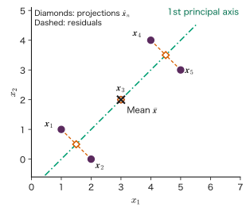
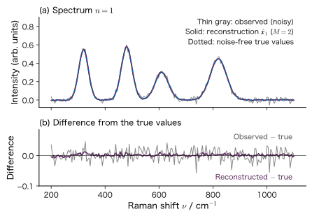

Chapter 18Continuous Latent Variables — PCA and Low-Dimensional Representations
- We collected 60 Raman spectra, each measured at 200 wavenumbers. Each spectrum is a set of 200 numbers, but does it really have 200 degrees of freedom? How many numbers are enough to describe it?
- Is a “principal component” extracted by principal component analysis (PCA) the spectrum of a physical component (a phase or a compound) contained in the sample?
- Why does the direction of a principal component change when we merely change the unit from µm to nm? When should we standardize?
Suppose we prepare 60 powders by mixing two compounds in varying proportions and measure the Raman spectrum of each at 200 wavenumbers. One spectrum is a set of 200 intensities, that is, one point in a 200-dimensional space. However, apart from noise, each spectrum is determined as the sum of “some multiple of the spectrum of compound 1” and “some multiple of the spectrum of compound 2,” so only two coefficients can actually vary freely. The 60 points lie almost on a two-dimensional plane inside the 200-dimensional space. The dimension of the data (the number of quantities measured) differs from the number of degrees of freedom the data actually have.
In this chapter we derive principal component analysis (PCA), which finds such a low-dimensional surface, as a variance-maximization problem using the method of Lagrange multipliers, and show that it gives the same answer as minimizing the reconstruction error. Next we examine the computation by the SVD, standardization, and the arbitrariness of principal components; in the second half we discuss probabilistic PCA, factor analysis, autoencoders, and the place of visualization methods (t-SNE and UMAP) and the cautions that go with them. The latent variable in Chapter 17 was a discrete quantity, “which cluster,” whereas the latent variable in this chapter is a continuous quantity, “a low-dimensional coordinate.”
- Solve the variance-maximization problem by the method of Lagrange multipliers and derive that the principal components are eigenvectors of the covariance matrix.
- Show that maximizing the variance of the projection and minimizing the reconstruction error give the same solution, and explain that the reconstruction error equals the sum of the discarded eigenvalues.
- Compute by hand the covariance matrix, eigenvalues, principal components, projections, and reconstructions for a few data points in two dimensions.
- Obtain the eigenvalues $\lambda_i=s_i^{2}/N$ and the principal components from the SVD of the centered data matrix, and compute the proportion of variance and the cumulative proportion of variance. Explain the difference between $1/N$ and $1/(N-1)$.
- Give an example in which a change of units changes the principal components, and choose appropriately between PCA of the covariance matrix and PCA of the correlation matrix (standardization).
- Explain the arbitrariness in the sign and rotation of principal components, and why principal components do not coincide with the spectra of the physical components.
- Derive the marginal distribution $\Normal(\bm{\mu},\bm{W}\bm{W}^{\tp}+\sigma^{2}\bm{I})$ of probabilistic PCA and the posterior distribution of the latent variables, and state the relations to factor analysis, autoencoders, and t-SNE.
- Estimate “how many components there are” by PCA of many spectra, and point out the limitations of this estimate (noise, peak shifts, outliers).
Sections for the introductory route: This chapter belongs to the detailed route. On the introductory route, read only 18.12 (Summary). The next chapter to read on the introductory route is Chapter 22.
18.1 High-Dimensional Data Lie on a Low-Dimensional SetDetailed Route
18.1.1 What we want to do
We begin with a numerical introductory example. Figure 18.1(a) shows Raman-like spectra of samples that mix two pure components (synthetic data for teaching purposes, not spectra of real materials). Pure component 1 has Gaussian peaks at 320 cm−1 and 610 cm−1, and pure component 2 has Gaussian peaks at 480 cm−1 and 820 cm−1. The intensity of spectrum $n$ ($n=1,\dots,60$) at wavenumber $\nu$ was generated as
$$ x_n(\nu)=I_n\bigl\{f_{n1}\,s_1(\nu)+f_{n2}\,s_2(\nu)\bigr\}+\sigma\,\varepsilon_n(\nu) $$Here $s_k(\nu)$ is the spectrum of pure component $k$, $f_{nk}\ge0$ ($f_{n1}+f_{n2}=1$) is the mixing ratio, $I_n$ is an overall strength that varies from sample to sample in the range 0.7–1.3 (imitating fluctuations of intensity caused by measurement conditions), and $\sigma\varepsilon_n(\nu)$ is Gaussian noise with standard deviation $\sigma=0.02$ (arbitrary units). The wavenumber takes 200 points from 200 to 1100 cm−1, so one spectrum is a $D=200$-dimensional vector $\bm{x}_n\in\R^{200}$. The details of the generation (peak positions, widths, heights, and random numbers) are the same as in Simulator 18.2 in Section 18.6, and the seed is 20261113.

Figure 18.1(b) shows the variation among the 60 spectra decomposed into “in which directions, and by how much, it spreads” (the eigenvalues of the covariance matrix, defined in Section 18.2). For the two-component data there are two large values, and from the third on the values drop abruptly to about 1/500 and line up side by side. For the three-component data there are three large values. This shows that the 200-dimensional data actually cluster near a 2-dimensional subspace (a 3-dimensional one for three components), and spread in the other directions only by the amount of the noise. The goal of this chapter is to understand how to find such a subspace from the data alone.
18.1.2 Linear low-dimensional representations
Without noise, spectrum $n$ is a linear combination $a_{n1}\bm{s}_1+a_{n2}\bm{s}_2$ ($a_{nk}=I_nf_{nk}$) of two vectors $\bm{s}_1,\bm{s}_2\in\R^{200}$ (the pure-component spectra arranged as 200 points). That is, all 60 points lie on the 2-dimensional plane (through the origin) spanned by $\bm{s}_1$ and $\bm{s}_2$. Even if we do not know the pure components, if we assume that “the data lie near some $M$-dimensional plane,” we can approximate each data point in the following form.
\begin{equation} \bm{x}_n\approx\bar{\bm{x}}+\sum_{i=1}^{M}z_{ni}\,\bm{v}_i \label{eq:18-lowrank} \end{equation}Here $n=1,\dots,N$, $\bar{\bm{x}}=\frac1N\sum_n\bm{x}_n\in\R^{D}$ is the mean of the data, $\bm{v}_1,\dots,\bm{v}_M\in\R^{D}$ are mutually orthogonal vectors of length 1 (a basis) that determine the direction of the plane, and $z_{ni}\in\R$ is the coordinate of data point $n$ within the plane. $M$ is the dimension of the plane; like the $M$ used in Chapter 8 for the number of basis functions, it denotes “the number of bases used.”
The right-hand side of Eq. \eqref{eq:18-lowrank} requires $D+MD+NM$ numbers; for $N=60$, $D=200$, $M=2$ this is 720, which is 6 % of the original 12000. We call this $\bm{z}_n=(z_{n1},\dots,z_{nM})^{\tp}\in\R^{M}$ the low-dimensional representation of data point $n$. The quantity $\bm{z}_n$ is not measured directly, and can be regarded as a continuous latent variable behind the data.
Notation: $\bm{z}$ and $M$ in this chapter
In this book we used $\bm{z}$ in Chapter 14 for the output of a hidden layer, and in Chapter 17 for a one-hot latent variable that indicates which component of a Gaussian mixture model a data point belongs to. In this chapter, $\bm{z}_n\in\R^{M}$ is a continuous-valued latent variable (a low-dimensional coordinate). $M$ is the dimension of the latent variable (the number of principal components kept), and we assume $M\le D$. Also, $\lambda_i$ denotes an eigenvalue in this chapter, and is not used for the regularization coefficient $\lambda$ (the two are distinguished by the presence or absence of a subscript).
Example 18.1: A mixture of two components seen at three wavenumbers
Suppose the spectra of the pure components are measured at only three wavenumbers, with $\bm{s}_1=(2,0,1)^{\tp}$ and $\bm{s}_2=(0,2,1)^{\tp}$ (a numerical example for teaching purposes). Find the three spectra $\bm{x}_1,\bm{x}_2,\bm{x}_3$ (without noise) mixed with coefficients $(a_{n1},a_{n2})=(1,1),\,(2,1),\,(1,3)$. (1) Express $\bm{x}_3$ as a linear combination of $\bm{x}_1$ and $\bm{x}_2$. (2) Verify that the determinant of the $3\times3$ matrix whose rows are the three spectra is 0. (3) In 3-dimensional space, on what kind of set do the three points lie?
Solution. From $\bm{x}_n=a_{n1}\bm{s}_1+a_{n2}\bm{s}_2$ we get
$$ \begin{aligned}&\bm{x}_1=(2,2,2)^{\tp},\quad \bm{x}_2=(4,2,3)^{\tp},\\&\bm{x}_3=(2,6,4)^{\tp}.\end{aligned} $$(1) On the side of the coefficients, solve $(1,3)=c_1(1,1)+c_2(2,1)$. Component by component, $c_1+2c_2=1$ and $c_1+c_2=3$. Subtracting the two equations gives $c_2=-2$, and hence $c_1=5$. Since $\bm{x}_n$ is linear in the coefficients, $\bm{x}_3=5\bm{x}_1-2\bm{x}_2$. Checking: $5(2,2,2)-2(4,2,3)$ $=(10-8,\,10-4,\,10-6)$ $=(2,6,4)$.
(2) Expand along the first row (cofactor expansion).
(3) Each of the three points is a linear combination of $\bm{s}_1$ and $\bm{s}_2$, so it lies on the plane through the origin spanned by $\bm{s}_1,\bm{s}_2$. A normal vector is the outer product $\bm{s}_1\times\bm{s}_2$ $=(0\cdot1-1\cdot2,\ 1\cdot0-2\cdot1,$ $2\cdot2-0\cdot0)$ $=(-2,-2,4)$, so the plane is $-2x-2y+4w=0$, that is, $x+y=2w$ (we wrote the third coordinate as $w$). For $\bm{x}_1$: $2+2=2\cdot2$; for $\bm{x}_2$: $4+2=2\cdot3$; for $\bm{x}_3$: $2+6=2\cdot4$; all of them satisfy it. Even though we measure with three numbers, the number of degrees of freedom is two.
Real data contain noise, so the points lie not on the plane but near it. Moreover, we do not know the spectra of the pure components. So in the next section we determine the $\bm{v}_i$ in Eq. \eqref{eq:18-lowrank} from the data by searching, one after another, for “the directions in which the point cloud of the data spreads the most.”
18.2 Derivation of PCA — Maximizing the Variance of the ProjectionDetailed Route
18.2.1 Definitions and notation
There are $N$ data points $\bm{x}_1,\dots,\bm{x}_N\in\R^{D}$ (column vectors). There are no labels (target values). We define the quantities used in PCA.
Definition 18.1: Sample mean, centered data matrix, and sample covariance matrix
The sample mean $\bar{\bm{x}}\in\R^{D}$, the centered data matrix $\bm{X}\in\R^{N\times D}$ (whose $n$th row is $(\bm{x}_n-\bar{\bm{x}})^{\tp}$), and the sample covariance matrix $\bm{S}\in\R^{D\times D}$ are defined by Eq. \eqref{eq:18-cov} below. The $(j,k)$ component of $\bm{S}$ is the covariance of the $j$th and $k$th variables, and the diagonal components are the variances of the individual variables. In this chapter the variance is defined with $1/N$ (the difference from $1/(N-1)$ is discussed in Section 18.4).
$\bm{S}$ is symmetric ($\bm{S}^{\tp}=\bm{S}$) and positive semidefinite (for every $\bm{a}\in\R^{D}$, $\bm{a}^{\tp}\bm{S}\bm{a}=\frac1N\sum_n\{\bm{a}^{\tp}(\bm{x}_n-\bar{\bm{x}})\}^{2}\ge0$) (Chapter 2, Section 2.5). Therefore $\bm{S}$ has mutually orthogonal eigenvectors $\bm{v}_1,\dots,\bm{v}_D$ of length 1 and nonnegative eigenvalues $\lambda_1\ge\lambda_2\ge\dots\ge\lambda_D\ge0$, and
$$ \begin{aligned}&\bm{S}\bm{v}_i=\lambda_i\bm{v}_i,\qquad \bm{v}_i^{\tp}\bm{v}_j=\begin{cases}1&(i=j)\\0&(i\ne j)\end{cases},\\ &\bm{S}=\sum_{i=1}^{D}\lambda_i\bm{v}_i\bm{v}_i^{\tp}\end{aligned} $$can be written (this is the diagonalization of a real symmetric matrix by an orthogonal matrix; it is the same fact that we used for $\bm{\Sigma}$ in Chapter 3, Section 3.6, and the proof is in Appendix A, Section A.3). The eigenvalues are numbered in descending order. The sum of the diagonal components of $\bm{S}$ (the trace) equals the sum of the eigenvalues, and $\tr\bm{S}=\sum_i\lambda_i$ is called the total variance.
18.2.2 Projection onto one direction and its variance
Choose one vector $\bm{u}\in\R^{D}$ of length 1 ($\bm{u}^{\tp}\bm{u}=1$), and project the deviation of each data point from the mean onto this direction. The (signed) length of the projection is
$$ z_n=\bm{u}^{\tp}(\bm{x}_n-\bar{\bm{x}})\qquad(n=1,\dots,N) $$(Figure 18.2). The mean of $z_n$ is $\frac1N\sum_n\bm{u}^{\tp}(\bm{x}_n-\bar{\bm{x}})$ $=\bm{u}^{\tp}\bigl(\frac1N\sum_n\bm{x}_n-\bar{\bm{x}}\bigr)=\bm{u}^{\tp}\bm{0}=0$, so the variance of $z_n$ is the mean of the squares.
\begin{equation} \begin{aligned} &\frac1N\sum_{n=1}^{N}z_n^{2}\\ &=\frac1N\sum_{n}\bm{u}^{\tp}(\bm{x}_n-\bar{\bm{x}})\\ &\qquad\times(\bm{x}_n-\bar{\bm{x}})^{\tp}\bm{u}\\ &=\bm{u}^{\tp}\bm{S}\bm{u} \end{aligned} \label{eq:18-projvar} \end{equation}In the second line, of the two factors in $z_n^{2}=z_n\,z_n$ we wrote one as $\bm{u}^{\tp}(\bm{x}_n-\bar{\bm{x}})$ and the other as $(\bm{x}_n-\bar{\bm{x}})^{\tp}\bm{u}$ (a scalar is unchanged by transposition). In the third line, since $\bm{u}$ does not depend on $n$, we moved it outside the sum, and replaced the remaining $\frac1N\sum_n(\bm{x}_n-\bar{\bm{x}})(\bm{x}_n-\bar{\bm{x}})^{\tp}$ with $\bm{S}$ of Eq. \eqref{eq:18-cov}.
18.2.3 Solving the variance maximization with the method of Lagrange multipliers
The direction in which the point cloud spreads the most is the direction in which the variance of the projection \eqref{eq:18-projvar} is maximal. If the length of $\bm{u}$ were free, $\bm{u}^{\tp}\bm{S}\bm{u}$ could be made arbitrarily large, so we fix the length to 1. The problem is
$$ \max_{\bm{u}\in\R^{D}}\ \bm{u}^{\tp}\bm{S}\bm{u}\qquad\text{subject to:}\ \bm{u}^{\tp}\bm{u}=1 $$Since this is a maximization with an equality constraint, we use the method of Lagrange multipliers from Chapter 7, Section 7.7. We write the multiplier of the equality constraint as $\nu$ and the Lagrangian as $\Lambda$ (the same symbols as in Chapter 7).
Derivation: Principal components are eigenvectors of the covariance matrix
Let the Lagrangian be
\begin{equation} \begin{aligned}\Lambda(\bm{u},\nu)&=\bm{u}^{\tp}\bm{S}\bm{u}\\&\quad-\nu\,(\bm{u}^{\tp}\bm{u}-1)\end{aligned} \label{eq:18-lagr} \end{equation}At the $\bm{u}$ that gives the maximum, $\partial\Lambda/\partial\bm{u}=\bm{0}$. We compute the gradient of the quadratic form component by component. Differentiating $\bm{u}^{\tp}\bm{S}\bm{u}=\sum_{j}\sum_{k}u_jS_{jk}u_k$ partially with respect to $u_l$, the terms with $j=l$ and with $k=l$ give
$$ \begin{aligned}\pdiff{}{u_l}\sum_{j,k}u_jS_{jk}u_k&=\sum_{k}S_{lk}u_k+\sum_{j}u_jS_{jl}\\&=2\sum_{k}S_{lk}u_k\end{aligned} $$(in the last step we used $S_{jl}=S_{lj}$, since $\bm{S}$ is symmetric). In vector form, $\partial(\bm{u}^{\tp}\bm{S}\bm{u})/\partial\bm{u}=2\bm{S}\bm{u}$. Similarly, $\partial(\bm{u}^{\tp}\bm{u})/\partial\bm{u}=2\bm{u}$ (the case $\bm{S}=\bm{I}$). Therefore
$$ \pdiff{\Lambda}{\bm{u}}=2\bm{S}\bm{u}-2\nu\bm{u}=\bm{0} \ \Longrightarrow\ \bm{S}\bm{u}=\nu\bm{u} . $$That is, the optimal $\bm{u}$ is an eigenvector of $\bm{S}$, and the multiplier $\nu$ is its eigenvalue. The variance of the projection in this case, obtained by multiplying by $\bm{u}^{\tp}$ from the left and using $\bm{u}^{\tp}\bm{u}=1$, is
$$ \bm{u}^{\tp}\bm{S}\bm{u}=\nu\,\bm{u}^{\tp}\bm{u}=\nu $$which is the eigenvalue itself. Every eigenvector satisfies $\partial\Lambda/\partial\bm{u}=\bm{0}$, but the variance is maximal for the one with the largest eigenvalue, $\bm{u}=\bm{v}_1$, and the maximum is $\lambda_1$.
That this is the maximum not only among the eigenvectors but among all $\bm{u}$ of length 1 follows by setting $M=1$ in the proof of Theorem 18.2.
∎
The direction $\bm{v}_1$ that gives the maximum is called the direction of the first principal component (the first principal axis), and $z_{n1}=\bm{v}_1^{\tp}(\bm{x}_n-\bar{\bm{x}})$ is called the first principal component score of point $n$. The components of the eigenvector $\bm{v}_i$ are often called loadings (in PCA of spectra, $\bm{v}_i$ is drawn as a function of the wavenumber).
18.2.4 The second and later principal components
The second principal component is defined as “the direction, among those orthogonal to the first principal component, in which the variance of the projection is maximal.” There are now two constraints ($\bm{u}^{\tp}\bm{u}=1$ and $\bm{v}_1^{\tp}\bm{u}=0$), so we use two multipliers.
$$ \Lambda(\bm{u},\nu,\nu')=\bm{u}^{\tp}\bm{S}\bm{u}-\nu(\bm{u}^{\tp}\bm{u}-1)-\nu'\,\bm{v}_1^{\tp}\bm{u} $$Differentiating with respect to $\bm{u}$ and setting the result to 0 gives $2\bm{S}\bm{u}-2\nu\bm{u}-\nu'\bm{v}_1=\bm{0}$. Multiply by $\bm{v}_1^{\tp}$ from the left. Since $\bm{v}_1^{\tp}\bm{S}\bm{u}=(\bm{S}\bm{v}_1)^{\tp}\bm{u}=\lambda_1\bm{v}_1^{\tp}\bm{u}=0$, $\bm{v}_1^{\tp}\bm{u}=0$, and $\bm{v}_1^{\tp}\bm{v}_1=1$, we obtain $\nu'=0$. What remains is again $\bm{S}\bm{u}=\nu\bm{u}$, and the answer is the eigenvector with the largest eigenvalue among those orthogonal to $\bm{v}_1$, namely $\bm{u}=\bm{v}_2$ (variance $\lambda_2$). Repeating the same argument, we obtain the following theorem.
Theorem 18.1: Principal component analysis
Let the eigenvalues of the sample covariance matrix $\bm{S}$ be $\lambda_1\ge\dots\ge\lambda_D\ge0$ and the corresponding eigenvectors of length 1 be $\bm{v}_1,\dots,\bm{v}_D$. The direction of the $i$th principal component is $\bm{v}_i$, and the variance of the projection $z_{ni}=\bm{v}_i^{\tp}(\bm{x}_n-\bar{\bm{x}})$ onto that direction is $\lambda_i$. The scores of different principal components are uncorrelated (for $i\ne j$, $\frac1N\sum_nz_{ni}z_{nj}=\bm{v}_i^{\tp}\bm{S}\bm{v}_j=\lambda_j\bm{v}_i^{\tp}\bm{v}_j=0$).
If some eigenvalues are equal (for example $\lambda_1=\lambda_2$), the direction is not determined uniquely within that eigenspace. In real data the eigenvalues are almost never exactly equal, but when they are close, the directions of the principal components can change greatly with a slight difference in the data (Sections 18.6 and 18.11).
18.2.5 It gives the same solution as minimizing the reconstruction error
PCA has another interpretation. When each point is replaced by a point on an $M$-dimensional plane, we look for the plane that minimizes the mean of the squared deviations from the original points (the reconstruction error). We first examine the case $M=1$.
As in Figure 18.2, the point on the line of direction $\bm{u}$ nearest to $\bm{x}_n$ is $\hat{\bm{x}}_n=\bar{\bm{x}}+z_n\bm{u}$ (where $z_n=\bm{u}^{\tp}(\bm{x}_n-\bar{\bm{x}})$). The residual $\bm{x}_n-\hat{\bm{x}}_n=(\bm{x}_n-\bar{\bm{x}})-z_n\bm{u}$ is orthogonal to $\bm{u}$ ($\bm{u}^{\tp}(\bm{x}_n-\hat{\bm{x}}_n)=z_n-z_n\bm{u}^{\tp}\bm{u}=0$). Therefore, by Pythagoras's theorem,
$$ \norm{\bm{x}_n-\bar{\bm{x}}}^{2}=z_n^{2}+\norm{\bm{x}_n-\hat{\bm{x}}_n}^{2}. $$Average both sides over $n$. The mean of the left-hand side is $\frac1N\sum_n\norm{\bm{x}_n-\bar{\bm{x}}}^{2}$ $=\frac1N\sum_n\sum_j(x_{nj}-\bar{x}_j)^{2}$ $=\sum_jS_{jj}=\tr\bm{S}$. Hence
\begin{equation} \begin{aligned}&\frac1N\sum_{n=1}^{N}\norm{\bm{x}_n-\hat{\bm{x}}_n}^{2}\\&=\tr\bm{S}-\bm{u}^{\tp}\bm{S}\bm{u}\end{aligned} \label{eq:18-recon1} \end{equation}Since $\tr\bm{S}$ is a constant independent of $\bm{u}$, minimizing the reconstruction error is the same as maximizing the variance of the projection $\bm{u}^{\tp}\bm{S}\bm{u}$. This is because a conservation law holds: “whichever direction we project onto, total variance = retained variance + discarded variance.”
We generalize to $M$ dimensions. Let $\bm{B}=(\bm{b}_1,\dots,\bm{b}_M)\in\R^{D\times M}$ be a matrix whose columns are mutually orthogonal and of length 1 ($\bm{B}^{\tp}\bm{B}=\bm{I}_M$), and let $\hat{\bm{x}}_n=\bar{\bm{x}}+\bm{B}\bm{B}^{\tp}(\bm{x}_n-\bar{\bm{x}})$ be the point obtained by orthogonally projecting $\bm{x}_n$ onto the plane through $\bar{\bm{x}}$ spanned by $\bm{b}_1,\dots,\bm{b}_M$. By the same computation as for $M=1$ (add up the projections onto the directions of the individual $\bm{b}_i$, and use the fact that the residual is orthogonal to every $\bm{b}_i$),
$$ \begin{aligned}\frac1N\sum_{n}\norm{\bm{x}_n-\hat{\bm{x}}_n}^{2}&=\tr\bm{S}-\sum_{i=1}^{M}\bm{b}_i^{\tp}\bm{S}\bm{b}_i\\&=\tr\bm{S}-\tr(\bm{B}^{\tp}\bm{S}\bm{B})\end{aligned} $$The remaining problem is the maximum of $\tr(\bm{B}^{\tp}\bm{S}\bm{B})$.
Theorem 18.2: The reconstruction error is the sum of the discarded eigenvalues
For $\bm{B}\in\R^{D\times M}$ satisfying $\bm{B}^{\tp}\bm{B}=\bm{I}_M$, we have $\tr(\bm{B}^{\tp}\bm{S}\bm{B})\le\lambda_1+\dots+\lambda_M$, with equality when $\bm{B}=(\bm{v}_1,\dots,\bm{v}_M)$. Therefore the minimum of the reconstruction error for an $M$-dimensional plane is given by Eq. \eqref{eq:18-reconM} below, and the optimal plane is the plane spanned by the first through $M$th principal components (the principal subspace).
Proof
Substitute $\bm{S}=\sum_i\lambda_i\bm{v}_i\bm{v}_i^{\tp}$.
$$ \begin{aligned}\tr(\bm{B}^{\tp}\bm{S}\bm{B})&=\sum_{i=1}^{D}\lambda_i\,\tr(\bm{B}^{\tp}\bm{v}_i\bm{v}_i^{\tp}\bm{B})\\&=\sum_{i=1}^{D}\lambda_i\norm{\bm{B}^{\tp}\bm{v}_i}^{2}\equiv\sum_{i=1}^{D}\lambda_ic_i .\end{aligned} $$Here $c_i=\norm{\bm{B}^{\tp}\bm{v}_i}^{2}$ (we used $\tr(\bm{a}\bm{a}^{\tp})=\bm{a}^{\tp}\bm{a}$ with $\bm{a}=\bm{B}^{\tp}\bm{v}_i$). The $c_i$ have two properties.
- $0\le c_i\le1$: $c_i=\sum_{m=1}^{M}(\bm{b}_m^{\tp}\bm{v}_i)^{2}$ is the sum of squares of the components obtained by splitting the unit-length vector $\bm{v}_i$ along the directions of the mutually orthogonal unit-length vectors $\bm{b}_1,\dots,\bm{b}_M$, so it does not exceed $\norm{\bm{v}_i}^{2}=1$.
- $\sum_ic_i=M$: since $\sum_i\bm{v}_i\bm{v}_i^{\tp}=\bm{I}$ ($\bm{v}_i$ is an orthonormal basis), $\sum_ic_i=\tr\bigl(\bm{B}^{\tp}\sum_i\bm{v}_i\bm{v}_i^{\tp}\bm{B}\bigr)$ $=\tr(\bm{B}^{\tp}\bm{B})=\tr\bm{I}_M=M$.
Suppose we distribute weights $c_i$, whose total is $M$ and each of which is at most 1, among the $\lambda_i$ arranged in decreasing order. Then $\sum_i\lambda_ic_i$ is largest when weight 1 is given to the $M$ largest ones, and its value is $\lambda_1+\dots+\lambda_M$ (moving even one weight toward a smaller $\lambda$ decreases the sum or leaves it unchanged). If $\bm{B}=(\bm{v}_1,\dots,\bm{v}_M)$, then $c_1=\dots=c_M=1$ and the rest are 0, so equality holds. Finally, subtracting from $\tr\bm{S}=\sum_{i=1}^{D}\lambda_i$ gives Eq. \eqref{eq:18-reconM}.
∎
To summarize, the direction of a principal component is both “the direction in which the projected data look most spread out” and “the direction that gives the smallest error when we approximate by the plane in that direction.” PCA has two starting points, Hotelling's (1933) variance maximization and Pearson's (1901) minimization of the fitting error, and the two give the same answer. In what follows, the point approximated by $M$ principal components
\begin{equation} \begin{aligned}\hat{\bm{x}}_n&=\bar{\bm{x}}+\sum_{i=1}^{M}z_{ni}\bm{v}_i,\\ z_{ni}&=\bm{v}_i^{\tp}(\bm{x}_n-\bar{\bm{x}})\end{aligned} \label{eq:18-xhat} \end{equation}is called the reconstruction. It is obtained by determining $\bm{v}_i$ and $z_{ni}$ in Eq. \eqref{eq:18-lowrank} from the principal components and their scores.
Example 18.2: Finding the principal axes from a two-dimensional covariance matrix
Two measured values $(x_1,x_2)$ were collected for 100 data points (the default data of Simulator 18.1; synthetic data for teaching purposes). The sample covariance matrix is
$$ \bm{S}=\begin{pmatrix}1.0913&0.60767\\0.60767&0.69686\end{pmatrix} $$(the units are the squares of the units of the respective measured values). (1) Find the eigenvalues $\lambda_1,\lambda_2$. (2) Find the angle $\varphi_1$ between the first principal axis and the $x_1$ axis. (3) For the directions $\bm{u}=(\cos\varphi,\sin\varphi)^{\tp}$ with $\varphi=0^{\circ},45^{\circ},90^{\circ}$, find the variance of the projection and the reconstruction error.
Solution. (1) For a 2×2 matrix, the characteristic equation $\det(\bm{S}-\lambda\bm{I})=0$ is $\lambda^{2}-(\tr\bm{S})\lambda+\det\bm{S}=0$.
$$ \begin{aligned} \tr\bm{S}&=1.0913+0.69686=1.78816,\\ \det\bm{S}&=1.0913\times0.69686-0.60767^{2}\\&=0.76048-0.36926=0.39122 . \end{aligned} $$By the quadratic formula,
$$ \begin{aligned} \lambda_{1,2}&=\frac{1.78816\pm\sqrt{1.78816^{2}-4\times0.39122}}{2}\\ &=\frac{1.78816\pm\sqrt{3.19752-1.56488}}{2}\\&=\frac{1.78816\pm1.27775}{2}, \end{aligned} $$so $\lambda_1=1.5330$ and $\lambda_2=0.2552$. (This can be checked by the sum $1.7882=\tr\bm{S}$ and the product $0.3912=\det\bm{S}$.)
(2) From the first row $(1.0913-\lambda_1)v_1+0.60767v_2=0$ of $\bm{S}\bm{v}=\lambda_1\bm{v}$, we get $v_2/v_1=(\lambda_1-1.0913)/0.60767$ $=0.4417/0.60767=0.7268$. Thus $\varphi_1=\arctan0.7268=36.0^{\circ}$. (For a 2×2 matrix, we also obtain $2\varphi_1=72.0^{\circ}$ from $\tan2\varphi_1=2S_{12}/(S_{11}-S_{22})$ $=1.21534/0.39444=3.0812$.)
(3) We have $\bm{u}^{\tp}\bm{S}\bm{u}=S_{11}\cos^{2}\varphi$ $+2S_{12}\cos\varphi\sin\varphi+S_{22}\sin^{2}\varphi$, and by Eq. \eqref{eq:18-recon1} the reconstruction error is $1.78816-\bm{u}^{\tp}\bm{S}\bm{u}$.
- $\varphi=0^{\circ}$: $\bm{u}^{\tp}\bm{S}\bm{u}=S_{11}=1.0913$, and the reconstruction error is $0.69686$.
- $\varphi=45^{\circ}$: since $\cos^{2}=\sin^{2}=\cos\sin=1/2$, we get $\frac12(1.0913+2\times0.60767+0.69686)$ $=1.502$, and the reconstruction error is $0.2864$.
- $\varphi=90^{\circ}$: $S_{22}=0.69686$, and the reconstruction error is $1.0913$.
At every angle, the sum of the two is $\tr\bm{S}=1.7882$. The maximum, $1.5330=\lambda_1$, is attained only at $\varphi=36.0^{\circ}$, and even at 45° the value is slightly smaller.
![The left panel shows 100 points spread in an elongated shape rising to the right, together with the first principal axis through their mean (about 36 degrees, dash-dotted line), the second principal axis (dotted line), and the direction u at angle 0 degrees (solid line). The right panel plots the angle φ on the horizontal axis; the variance of the projection (solid line) and the reconstruction error (dashed line) form waves in opposite phase, their sum is constant at 1.788, and the variance of the projection is largest at 36.0 degrees.](figs/ch18_fig18-3.svg)
The following simulator lets us check all of this by rotating the direction by hand.
Simulator 18.1: Rotating the direction to find the principal components
This simulator projects a two-dimensional point cloud onto a direction $\bm{u}$ (angle $\varphi$) and lets us check how the variance of the projection $\bm{u}^{\tp}\bm{S}\bm{u}$ and the reconstruction error change with the angle, and that the direction that maximizes the variance is an eigenvector of the covariance matrix. It can also try changing units and standardization (Section 18.5). As in the text, the variance is defined with $1/N$. The simulator displays the length of the projection onto the direction $\bm{u}$ as $t_n$, but this is the same quantity as $z_n$ in this chapter (Section 18.2.2); this book reserves $t$ for time.
Open in a separate window at full size →
Operate and Observe
- Look at the readout with the defaults right after opening (“Data to display” is “Two-dimensional point cloud (rotate the direction)”, number of data points $N=100$, scale factor $c=1.00$, random-number seed 20261113, angle $\varphi=0^{\circ}$) → $S_{11},S_{12},S_{22}$ are 1.091, 0.6077, 0.6969; the eigenvalues $\lambda_1,\lambda_2$ are 1.533, 0.2552; the angle of the first principal axis is 36.0°; the proportion of variance is 85.7 %. The variance of the projection is 1.091 and the reconstruction error is 0.6969. Compare with Example 18.2.
- Move “Angle $\varphi$ of direction $u$” to 45° and 90° → the variance of the projection and the reconstruction error become 1.502 and 0.2864, and 0.6969 and 1.091; in the figure below, see that their sum is $\tr\bm{S}=1.788$ at every angle. Compare with Eq. \eqref{eq:18-recon1}.
- Press “Align with principal axis” → at $\varphi=36.0^{\circ}$ the variance of the projection is $1.533=\lambda_1$ (the maximum) and the reconstruction error is $0.2552=\lambda_2$. This is the case $D=2$, $M=1$ of Eq. \eqref{eq:18-reconM}.
- (After reading Section 18.5) Set “Scale factor $c$ that changes the unit of $x_2$” to 10 at the right end → the angle of the first principal axis becomes 85.0°, the eigenvalues become 70.22 and 0.5571, and the proportion of variance becomes 99.2 %. At 0.1 at the left end, they are 3.2°, 1.095, and 0.003574. Next, check “Standardize” → regardless of $c$, the angle is 45.0° and the eigenvalues are 1.697 and 0.3032 ($1\pm r$, $r=0.697$). Compare with Eq. \eqref{eq:18-corr-eig}.
Questions After Operating
- In step 2, why is the sum of the variance of the projection and the reconstruction error the same at every angle?
Sample answers
At each point, the deviation from the mean, $\bm{x}_n-\bar{\bm{x}}$, splits into “the component along the direction $\bm{u}$” and “the residual orthogonal to it.” Since these two are orthogonal, Pythagoras's theorem $\norm{\bm{x}_n-\bar{\bm{x}}}^{2}=z_n^{2}+\norm{\bm{x}_n-\hat{\bm{x}}_n}^{2}$ holds. Averaging over $n$, the left-hand side is $\tr\bm{S}=1.788$, which does not depend on the direction (Eq. \eqref{eq:18-recon1}).
- In step 4, when the scale factor is $c=10$, the proportion of variance of the first principal component rises to 99.2 %. Can we say that the structure of the data has become more one-dimensional?
Sample answers
No, we cannot. We have merely multiplied the values of $x_2$ by 10, and the relationships among the points have not changed at all. The variance of $x_2$ became 100 times larger and now makes up most of the total variance, so the first principal component has become almost the $x_2$ axis, and the proportion of variance has risen only in appearance. When we line up quantities whose units do not match, we should consider PCA of the correlation matrix (standardization) (Section 18.5).
18.3 Hand Calculation — Five Points in Two DimensionsDetailed Route
We carry out the whole PCA procedure on data small enough to follow by hand. The method for finding eigenvalues and eigenvectors is the same as in University Mathematics, Section 12.1, and diagonalization is the same as in Section 12.3. The procedure has the following five steps.
- Find the mean $\bar{\bm{x}}$ and subtract it from each point (centering).
- Form the sample covariance matrix $\bm{S}$ (Eq. \eqref{eq:18-cov}).
- Arrange the eigenvalues of $\bm{S}$ in decreasing order and find eigenvectors of length 1.
- Compute the scores $z_{ni}=\bm{v}_i^{\tp}(\bm{x}_n-\bar{\bm{x}})$.
- If necessary, reconstruct with $M$ components (Eq. \eqref{eq:18-xhat}) and check that the reconstruction error equals the sum of the discarded eigenvalues.
Example 18.3: Computing the PCA of five points by hand
There are five data points $\bm{x}_1=(1,1)^{\tp}$, $\bm{x}_2=(2,0)^{\tp}$, $\bm{x}_3=(3,2)^{\tp}$, $\bm{x}_4=(4,4)^{\tp}$, $\bm{x}_5=(5,3)^{\tp}$, each with two descriptors $(x_1,x_2)$ (a numerical example for teaching purposes). (1) Find the mean and the sample covariance matrix $\bm{S}$ (with $1/N$). (2) Find the eigenvalues and the eigenvectors of length 1. (3) Find the scores $z_{n1}$ of the first principal component and their variance. (4) Find the points $\hat{\bm{x}}_n$ reconstructed from the first principal component alone, and the reconstruction error.
Solution. (1) $\bar{\bm{x}}=\frac15(1+2+3+4+5,$ $1+0+2+4+3)^{\tp}=(3,2)^{\tp}$. The centered points are
$$ \begin{aligned}\bm{x}_n-\bar{\bm{x}}:\ &(-2,-1),\ (-1,-2),\ (0,0),\\&(1,2),\ (2,1).\end{aligned} $$The sums of squares and products are $\sum(x_1-\bar{x}_1)^{2}=4+1+0+1+4=10$, $\sum(x_2-\bar{x}_2)^{2}=1+4+0+4+1=10$, and $\sum(x_1-\bar{x}_1)(x_2-\bar{x}_2)$ $=2+2+0+2+2=8$. Dividing by $N=5$ gives
$$ \bm{S}=\frac15\begin{pmatrix}10&8\\8&10\end{pmatrix}=\begin{pmatrix}2&1.6\\1.6&2\end{pmatrix}. $$(2) From $\det(\bm{S}-\lambda\bm{I})=(2-\lambda)^{2}-1.6^{2}=0$ we get $2-\lambda=\pm1.6$, so $\lambda_1=3.6$ and $\lambda_2=0.4$. For $\lambda_1=3.6$, the first row of $(\bm{S}-3.6\bm{I})\bm{v}=\bm{0}$ is $-1.6v_1+1.6v_2=0$, so $v_1=v_2$, and normalizing to length 1 gives $\bm{v}_1=\frac{1}{\sqrt2}(1,1)^{\tp}$. For $\lambda_2=0.4$, $1.6v_1+1.6v_2=0$ gives $\bm{v}_2=\frac{1}{\sqrt2}(-1,1)^{\tp}$. Since $\bm{v}_1^{\tp}\bm{v}_2=\frac12(-1+1)=0$, they are orthogonal. The total variance is $\tr\bm{S}=4=3.6+0.4$.
(3) $z_{n1}=\bm{v}_1^{\tp}(\bm{x}_n-\bar{\bm{x}})$ $=\{(x_{n1}-3)+(x_{n2}-2)\}/\sqrt2$, so
The mean is 0 and the variance is $\frac15\bigl(4\times\frac92\bigr)=\frac{18}{5}=3.6=\lambda_1$, in agreement with Theorem 18.1.
(4) $\hat{\bm{x}}_n=\bar{\bm{x}}+z_{n1}\bm{v}_1$. Here $z_{n1}\bm{v}_1=\frac{z_{n1}}{\sqrt2}(1,1)^{\tp}$ and $z_{n1}/\sqrt2=-1.5,-1.5,0,1.5,1.5$, so
The residuals $\bm{x}_n-\hat{\bm{x}}_n$ are $(-0.5,0.5)$, $(0.5,-0.5)$, $(0,0)$, $(-0.5,0.5)$, $(0.5,-0.5)$; all of them point in the direction of $\bm{v}_2$, and their squared length is 0.5 (0 only for point 3). The reconstruction error is $\frac15(4\times0.5)=0.4=\lambda_2$, which agrees with Eq. \eqref{eq:18-reconM}. The proportion of variance of the first principal component (Section 18.4) is $3.6/4=90\ \%$.

In this example, the 10 coordinates of the five points are represented almost completely by “2 for the mean + 1 for the direction of the principal axis (the angle 45°) + 5 scores,” and the only information lost is a small deviation in the direction of the second principal component (variance 0.4). Points 1 and 2 are different points in the original coordinates, but they cannot be distinguished if we look only at the score of the first principal component. Reducing the dimension also means “discarding small differences” in this way. Whether the discarded differences are really noise or are important differences must be judged with knowledge on the side of the data (Section 18.11).
18.4 Relation to the SVD — Numerical Computation and the Proportion of VarianceDetailed Route
18.4.1 The singular value decomposition of the centered data matrix
In actual computation, it is better to apply the singular value decomposition (SVD) directly to the centered data matrix $\bm{X}\in\R^{N\times D}$ (Definition 18.1) than to form $\bm{S}$ and solve the eigenvalue problem. The definition of the SVD is given in Chapter 8, Section 8.5 (Definition 8.3). Let $r=\min(N,D)$ and decompose
\begin{equation} \begin{aligned}&\bm{X}=\bm{U}\bm{S}_{\mathrm{sv}}\bm{V}^{\tp},\\ &\bm{U}\in\R^{N\times r},\ \ \bm{V}\in\R^{D\times r},\\ &\bm{S}_{\mathrm{sv}}=\diag(s_1,\dots,s_r)\end{aligned} \label{eq:18-svd} \end{equation}The columns of $\bm{U}$ and of $\bm{V}$ are mutually orthogonal vectors of length 1 ($\bm{U}^{\tp}\bm{U}=\bm{V}^{\tp}\bm{V}=\bm{I}_r$), and the singular values satisfy $s_1\ge\dots\ge s_r\ge0$. We write the diagonal matrix of singular values as $\bm{S}_{\mathrm{sv}}$ to distinguish it from the sample covariance matrix $\bm{S}$ (Chapter 8 wrote it as $\bm{\Sigma}$, but we avoid that here because it would be confused with the covariance matrix in this chapter).
Derivation: Reading the eigenvalues, principal components, and scores from the SVD
Substitute Eq. \eqref{eq:18-svd} into $\bm{S}=\frac1N\bm{X}^{\tp}\bm{X}$ of Eq. \eqref{eq:18-cov}. Using $\bm{X}^{\tp}=\bm{V}\bm{S}_{\mathrm{sv}}\bm{U}^{\tp}$ (a diagonal matrix is unchanged by transposition) and $\bm{U}^{\tp}\bm{U}=\bm{I}$, we obtain
$$ \bm{S}=\frac1N\bm{V}\bm{S}_{\mathrm{sv}}\bm{U}^{\tp}\bm{U}\bm{S}_{\mathrm{sv}}\bm{V}^{\tp}=\bm{V}\,\frac{\bm{S}_{\mathrm{sv}}^{2}}{N}\,\bm{V}^{\tp}. $$Multiplying by $\bm{V}$ from the right gives $\bm{S}\bm{V}=\bm{V}\bm{S}_{\mathrm{sv}}^{2}/N$, or, written column by column, $\bm{S}\bm{v}_i=(s_i^{2}/N)\,\bm{v}_i$. Therefore the $i$th column $\bm{v}_i$ of $\bm{V}$ is the direction of the $i$th principal component, and the eigenvalue is
\begin{equation} \lambda_i=\frac{s_i^{2}}{N} \label{eq:18-lam-sv} \end{equation}The matrix of scores $\bm{Z}\in\R^{N\times r}$ ($Z_{ni}=z_{ni}$) is $\bm{Z}=\bm{X}\bm{V}=\bm{U}\bm{S}_{\mathrm{sv}}\bm{V}^{\tp}\bm{V}=\bm{U}\bm{S}_{\mathrm{sv}}$, that is,
\begin{equation} z_{ni}=s_i\,U_{ni} \label{eq:18-score-sv} \end{equation}holds.
∎
Caution: The $\bm{U}$ of the SVD is not the direction of the principal components
The direction $\bm{v}_i\in\R^{D}$ of a principal component is a right singular vector of the SVD (a column of $\bm{V}$). The columns of the left singular vectors $\bm{U}$ are vectors in $\R^{N}$ (the space indexed by the data points), and, as Eq. \eqref{eq:18-score-sv} shows, they are the scores divided by the singular values. In references that arrange the rows and columns of $\bm{X}$ the other way (data points placed in columns rather than rows), the roles of $\bm{U}$ and $\bm{V}$ are interchanged, so check this when reading.
18.4.2 Why compute with the SVD?
There are two reasons.
- Precision: The condition number of $\bm{X}^{\tp}\bm{X}$ is the square of that of $\bm{X}$ (for the same reason as the normal equations in Chapter 8, Section 8.5), so in double precision, eigenvalues smaller than about $10^{-16}$ times the largest one are buried in rounding error. The SVD decomposes $\bm{X}$ directly, so this squaring does not occur.
- Size: For spectra and images, $D\gg N$ is common (for example, $D=200$, $N=60$). The matrix $\bm{S}$ is $D\times D$, but the SVD only needs to find $\min(N,D)$ singular values. Another approach is to solve the $N\times N$ problem $\bm{X}\bm{X}^{\tp}=\bm{U}\bm{S}_{\mathrm{sv}}^{2}\bm{U}^{\tp}$ and recover the eigenvectors by $\bm{v}_i=\bm{X}^{\tp}\bm{u}_i/s_i$.
Note also that the columns of the centered $\bm{X}$ each sum to 0 (that is, $\sum_n(\bm{x}_n-\bar{\bm{x}})=\bm{0}$), so the rank of $\bm{X}$ is at most $N-1$. There are at most $\min(N-1,D)$ nonzero eigenvalues. For spectra with $N=60$, $D=200$, at least 141 of the 200 eigenvalues are exactly 0 (apart from rounding error).
18.4.3 $1/N$ and $1/(N-1)$, the proportion of variance and the cumulative proportion of variance
The definition of the sample variance with the factor $1/(N-1)$ (the unbiased variance) is also widely used. In that case the covariance matrix is $\frac{N}{N-1}\bm{S}$, so the eigenvectors (the directions of the principal components) are the same and only the eigenvalues are multiplied by $N/(N-1)$, giving $\lambda_i=s_i^{2}/(N-1)$. The default differs among software packages, so check it when comparing the numerical values of the eigenvalues themselves. We define the proportion of variance of the $i$th principal component, and the cumulative proportion of variance up to the $M$th principal component, as follows. The values are the same under either definition.
\begin{equation} \begin{aligned}&\text{proportion of variance}=\frac{\lambda_i}{\sum_{j=1}^{D}\lambda_j},\\ &\text{cumulative proportion of variance}=\frac{\sum_{i=1}^{M}\lambda_i}{\sum_{j=1}^{D}\lambda_j}\end{aligned} \label{eq:18-ratio} \end{equation}The cumulative proportion of variance expresses “what fraction of the total variance $M$ principal components can explain.” By Theorem 18.2, 1 minus the cumulative proportion of variance equals the reconstruction error divided by the total variance.
Example 18.4: The SVD of the data matrix of five points
For the centered data matrix $\bm{X}\in\R^{5\times2}$ of Example 18.3, find (1) $\bm{X}^{\tp}\bm{X}$ and the singular values $s_1,s_2$, (2) the left singular vectors $\bm{u}_1,\bm{u}_2$, (3) the eigenvalues from Eq. \eqref{eq:18-lam-sv} and the eigenvalues when defined with $1/(N-1)$, and (4) the proportions of variance.
Solution. (1) The rows of $\bm{X}$ are $(-2,-1),(-1,-2),(0,0),(1,2),(2,1)$. Using the sums from Example 18.3,
$$ \bm{X}^{\tp}\bm{X}=\begin{pmatrix}10&8\\8&10\end{pmatrix}. $$The eigenvalues are $10\pm8$, namely $18$ and $2$. The singular values are their square roots, $s_1=\sqrt{18}=3\sqrt2\approx4.243$ and $s_2=\sqrt2\approx1.414$. The right singular vectors are the eigenvectors of $\bm{X}^{\tp}\bm{X}$, so they are the same as $\bm{v}_1,\bm{v}_2$ of Example 18.3.
(2) From $\bm{X}\bm{V}=\bm{U}\bm{S}_{\mathrm{sv}}$, column by column, $\bm{u}_i=\bm{X}\bm{v}_i/s_i$.
The components of $\bm{X}\bm{v}_2$ were computed row by row as $(-x_1+x_2)/\sqrt2$. We have $\norm{\bm{u}_1}^{2}=\frac14(1+1+0+1+1)=1$ and $\bm{u}_1^{\tp}\bm{u}_2=\frac14(-1+1+0+1-1)=0$, so they are indeed orthonormal. The vector $\bm{u}_i\in\R^{5}$ consists of values indexed by the data points; it is not the direction of a principal component (a vector in $\R^{2}$).
(3) $\lambda_1=18/5=3.6$ and $\lambda_2=2/5=0.4$ (in agreement with Example 18.3). With $1/(N-1)$ they are $18/4=4.5$ and $2/4=0.5$, both $5/4$ times as large.
(4) The proportions of variance are $3.6/4=0.9$ and $0.4/4=0.1$ (with $1/(N-1)$ the same values $4.5/5=0.9$ and $0.5/5=0.1$ result). From Eq. \eqref{eq:18-score-sv}, the scores of the first principal component are $s_1\bm{u}_1=\frac{3}{\sqrt2}(-1,-1,0,1,1)^{\tp}$, which agrees with Example 18.3 (3).
18.5 The Effect of Standardization — Principal Components That Change with UnitsDetailed Route
18.5.1 Changing the units rotates the principal axis
PCA looks for the “direction of large variance,” so it is sensitive to the magnitude of the numerical values of the variances. If we change the unit of a variable and multiply its numerical values by $c$, the variance of that variable is multiplied by $c^{2}$ and its covariance with the other variables is multiplied by $c$. For two variables, with $x_2\to c\,x_2$,
$$ \begin{pmatrix}S_{11}&S_{12}\\S_{12}&S_{22}\end{pmatrix}\ \longrightarrow\ \begin{pmatrix}S_{11}&c\,S_{12}\\c\,S_{12}&c^{2}S_{22}\end{pmatrix} $$When $c$ is made large, $c^{2}S_{22}$ overwhelms the other entries, and the first principal axis approaches the $x_2$ axis. Although the arrangement of the data points has not changed at all, the direction and the proportion of variance of the principal components change with the choice of units (Figure 18.5).
![The left panel plots the scale factor c on a logarithmic horizontal axis: the angle of the first principal axis increases along a curve (solid line) from 3.2 degrees at c=0.1 through 36.0 degrees at c=1 to 85.0 degrees at c=10, while after standardization it is always 45 degrees (a horizontal dashed line). The right panel shows the proportion of variance of the first principal component: without standardization it rises from 85 % near c=1 to above 99 % at both ends, and with standardization it is constant at 84.8 %.](figs/ch18_fig18-5.svg)
18.5.2 PCA of the correlation matrix
When we line up variables whose units do not match (grain size and hardness, composition and temperature, and so on), we often subtract the mean from each variable and divide by its standard deviation before performing PCA. This is called standardization. Let $\sigma_j=\sqrt{S_{jj}}$ be the standard deviation of variable $j$ and $\bm{D}_\sigma=\diag(\sigma_1,\dots,\sigma_D)$. Then the covariance matrix of the standardized data is
\begin{equation} \begin{aligned}\bm{R}&=\bm{D}_\sigma^{-1}\bm{S}\bm{D}_\sigma^{-1},\\ R_{jk}&=\frac{S_{jk}}{\sigma_j\sigma_k}\end{aligned} \label{eq:18-corr} \end{equation}which is the correlation matrix: its diagonal components are 1 and its off-diagonal components are the correlation coefficients. Since correlation coefficients do not depend on the units, PCA of the correlation matrix is unaffected by a change of units. For two variables, $\bm{R}=\begin{pmatrix}1&r\\r&1\end{pmatrix}$ ($r$ is the correlation coefficient), and from $\det(\bm{R}-\lambda\bm{I})=(1-\lambda)^{2}-r^{2}=0$ we obtain
\begin{equation} \begin{aligned}&\lambda=1+r:\ \ \tfrac{1}{\sqrt2}(1,1)^{\tp},\\ &\lambda=1-r:\ \ \tfrac{1}{\sqrt2}(1,-1)^{\tp}\end{aligned} \label{eq:18-corr-eig} \end{equation}(from the first row $-rv_1+rv_2=0$ of $(\bm{R}-(1+r)\bm{I})\bm{v}=\bm{0}$ we get $v_1=v_2$; the other case is similar). In PCA of the correlation matrix of two variables, the principal axes always point in the 45° or 135° direction regardless of the strength of the correlation, and the strength of the correlation appears only in the ratio of the eigenvalues.
Example 18.5: Grain size and hardness — µm·GPa versus µm·HV
For a group of samples of a sintered body, the variances and covariance of the mean grain size $d$ (µm) and the hardness $H$ were $\Var[d]=0.25\ \mu\mathrm{m}^{2}$, $\Var[H]=0.04\ \mathrm{GPa}^{2}$, and $\Cov[d,H]=-0.06\ \mu\mathrm{m\,GPa}$ (a numerical example for teaching purposes). (1) Find the direction and the eigenvalues of the first principal component when $(d,H)$ is expressed in µm and GPa. (2) What happens to the direction and the proportion of variance of the first principal component when the hardness is expressed as a Vickers hardness number (1 GPa = $1000/9.80665\approx101.97$ HV)? (3) Find the result of PCA of the correlation matrix.
Solution. For a 2×2 symmetric matrix, once $\lambda_1$ is known, the eigenvector can be written from the first row $(S_{11}-\lambda_1)v_1+S_{12}v_2=0$ as $\bm{v}_1\propto(S_{12},\ \lambda_1-S_{11})^{\tp}$.
(1) $\tr\bm{S}=0.29$ and $\det\bm{S}=0.25\times0.04-0.06^{2}=0.0064$. From $\lambda=\bigl(0.29\pm\sqrt{0.0841-0.0256}\bigr)/2$ $=(0.29\pm0.24187)/2$ we get $\lambda_1=0.2659$ and $\lambda_2=0.0241$. Then $\bm{v}_1\propto(-0.06,\ 0.2659-0.25)$ $=(-0.06,\ 0.0159)$. The angle from the $d$ axis is $180^{\circ}-\arctan(0.0159/0.06)$ $=180^{\circ}-14.9^{\circ}=165.1^{\circ}$ (or $-14.9^{\circ}$ if the sign is reversed). This is almost along the $d$ axis, and the proportion of variance is $0.2659/0.29=91.7\ \%$.
(2) With $k=101.97$, $\Var[H]=0.04k^{2}=415.93\ \mathrm{HV}^{2}$ and $\Cov[d,H]=-0.06k=-6.118\ \mu\mathrm{m\,HV}$. Then $\tr\bm{S}=416.18$ and $\det\bm{S}=0.25\times415.93-6.118^{2}$ $=103.98-37.43=66.55$, so
We have $\bm{v}_1\propto(-6.118,\ 416.02-0.25)$ $=(-6.118,\ 415.77)$, and the angle is $90^{\circ}+\arctan(6.118/415.77)=90.8^{\circ}$, which is almost along the $H$ axis. The proportion of variance is $416.02/416.18=99.96\ \%$. Although (1) and (2) use the same data, the first principal component has changed from a “grain-size principal component” to a “hardness principal component.”
(3) The correlation coefficient is $r=-0.06/(0.5\times0.2)=-0.6$, independent of the units. By Eq. \eqref{eq:18-corr-eig}, the eigenvalues are $1-r=1.6$ ($\tfrac{1}{\sqrt2}(1,-1)^{\tp}$, the 135° direction) and $1+r=0.4$. The proportion of variance is 80 %. The first principal component is the axis joining the direction “large grain size and small hardness” with the direction “small grain size and large hardness,” and it uses both variables with the same weight.
Should we standardize? — Rules of thumb
- When lining up variables with different units or different physical meanings (grain size, hardness, composition, temperature): the magnitude of the numerical value of a variance has no meaning, so consider standardizing.
- When lining up quantities of the same kind in the same unit (the intensity at each wavenumber of a spectrum, the brightness of each pixel of an image): the size of the variance itself (large at a peak, small on the baseline) is information, so we usually do not standardize. If we standardize a wavenumber that contains only baseline noise, the noise is amplified to the same weight as a peak.
- The mean and standard deviation used for standardization are computed from the training data only (computing them including the data used for evaluation causes data leakage; Chapter 6, Section 6.7). The same holds for the principal components of PCA themselves.
18.6 Interpreting Principal Components and Their ArbitrarinessDetailed Route
18.6.1 Arbitrariness of sign and rotation
Principal components have parts that cannot be determined from the data.
- Sign: if $\bm{v}_i$ is an eigenvector, then $-\bm{v}_i$ is also an eigenvector. Reversing the sign also reverses the score $z_{ni}$, and the product $z_{ni}\bm{v}_i$ and the reconstruction do not change. The sign varies with the software and the order of computation, so we must not attach meaning to “the first principal component points in the positive direction.”
- Rotation within the subspace: written in matrix form, the reconstruction \eqref{eq:18-xhat} is $\hat{\bm{x}}_n=\bar{\bm{x}}+\bm{V}_M\bm{V}_M^{\tp}(\bm{x}_n-\bar{\bm{x}})$ ($\bm{V}_M=(\bm{v}_1,\dots,\bm{v}_M)\in\R^{D\times M}$). Even if we replace $\bm{V}_M\to\bm{V}_M\bm{Q}$ by an arbitrary $M\times M$ orthogonal matrix $\bm{Q}$ ($\bm{Q}\bm{Q}^{\tp}=\bm{I}$), we have $\bm{V}_M\bm{Q}\bm{Q}^{\tp}\bm{V}_M^{\tp}=\bm{V}_M\bm{V}_M^{\tp}$, so neither the reconstruction nor the reconstruction error changes. For the purpose of reconstruction, only the subspace is meaningful, and the choice of basis within it is free. PCA merely fixes that freedom to one choice by the convention “in decreasing order of variance.” Principal components with close eigenvalues are only weakly distinguished by this convention, so they mix with each other when the data change slightly.
18.6.2 The orthogonality constraint and physical components
The directions of the principal components are mutually orthogonal. On the other hand, the spectra of physical pure components are usually not orthogonal if their peaks overlap. Moreover, although spectral intensities are never negative, two orthogonal vectors can both have “all components greater than or equal to 0” only when their peaks do not overlap at all (for the dot product $\sum_jv_{1j}v_{2j}$ to be 0, since each term is greater than or equal to 0, at every $j$ at least one of the two must be 0). Therefore, the principal components obtained from spectra with overlapping peaks usually contain negative values.
Another reason is centering. The principal components represent the “deviations” from the mean spectrum. In a mixture of two components, when $f_{n1}$ increases, the peaks of component 1 grow and the peaks of component 2 shrink, so the deviation is close to a difference spectrum that is “positive at the peaks of component 1 and negative at the peaks of component 2.” The first principal component $\bm{v}_1$ in Figure 18.6(a) has exactly this shape: it is positive at 320 and 610 cm−1 and negative at 480 and 820 cm−1. The second principal component $\bm{v}_2$ mainly represents the fluctuation of the overall intensity $I_n$ and is nearly positive at all peaks. Neither coincides with pure component 1 or pure component 2.
![A figure in two stacked panels. The upper panel has the Raman shift on the horizontal axis and the loadings normalized to length 1 on the vertical axis; it shows that the first principal component takes positive values at 320 and 610 and negative values at 480 and 820, that the second principal component takes positive values at all peaks, and that neither resembles the gray pure components 1 and 2 in shape. The lower panel is a scatter plot of the first and second principal component scores of the 60 spectra; the larger the mixing ratio of component 1, the further to the right the point lies.](figs/ch18_fig18-6.svg)
Example 18.6: A nonnegative orthogonal basis cannot be constructed
Consider two pure components measured at three wavenumbers, $\bm{s}_1=(1,1,0)^{\tp}$ and $\bm{s}_2=(0,1,1)^{\tp}$ (their peaks overlap at the middle wavenumber; a numerical example for teaching purposes). A mixed spectrum lies on the plane $P=\{(a,\,a+b,\,b)^{\tp}\}$ spanned by $\bm{s}_1,\bm{s}_2$. (1) Find the angle between $\bm{s}_1$ and $\bm{s}_2$. (2) Find a vector in $P$ that is orthogonal to $\bm{s}_1$. (3) Show that there is no orthonormal basis of $P$ in which both vectors have all components greater than or equal to 0.
Solution. (1) $\cos\theta=\bm{s}_1^{\tp}\bm{s}_2/(\norm{\bm{s}_1}\norm{\bm{s}_2})$ $=1/(\sqrt2\sqrt2)=1/2$, so $\theta=60^{\circ}$. They are not orthogonal.
(2) From $(a,a+b,b)\cdot(1,1,0)$ $=2a+b=0$ we get $b=-2a$. Taking $a=1$ gives $(1,-1,-2)^{\tp}$ (normalized to length 1, $\frac{1}{\sqrt6}(1,-1,-2)^{\tp}$). It has negative components.
(3) Suppose that two basis vectors $\bm{p}=(a,a+b,b)^{\tp}$ and $\bm{q}=(c,c+d,d)^{\tp}$ both have all components greater than or equal to 0 and are orthogonal. Each term of the dot product $ac+(a+b)(c+d)+bd=0$ is greater than or equal to 0, so every term is 0. In particular $(a+b)(c+d)=0$, so, for example, $a+b=0$. Since $a\ge0$ and $b\ge0$, we get $a=b=0$, that is, $\bm{p}=\bm{0}$, which contradicts length 1 (the case $c+d=0$ is similar). Hence no such basis exists. The principal components of PCA form an orthonormal basis of $P$, so at least one of them has a negative component.
18.6.3 When we want the pure components
What PCA tells us is “the dimension of the subspace near which the data lie” and “that subspace”; it does not tell us which basis within the subspace corresponds to the physical components (the arbitrariness of rotation in Section 18.6.1). To obtain the spectra and mixing ratios of the pure components, we must impose another, physically reasonable assumption in place of orthogonality. The representative one is nonnegative matrix factorization (NMF). We factorize the uncentered data matrix $\bm{X}_{\mathrm{raw}}\in\R^{N\times D}$ (whose $n$th row is $\bm{x}_n^{\tp}$) as
$$ \begin{aligned}&\bm{X}_{\mathrm{raw}}\approx\bm{A}\bm{H},\quad \bm{A}\in\R^{N\times M},\ \bm{H}\in\R^{M\times D},\\&\text{all components are }0\text{ or greater}\end{aligned} $$(the rows of $\bm{H}$ are the spectra of the components, and the rows of $\bm{A}$ are the mixing amounts). Lee and Seung (1999) showed that the nonnegativity constraint yields a “sum of parts” representation. However, NMF is not unique either. If there is a $\bm{P}$ such that $\bm{A}\bm{P}$ and $\bm{P}^{-1}\bm{H}$ are both nonnegative (scaling and permutation always qualify), the data fit is the same. To say anything about physical components, we need information from outside the data, such as measurements of pure samples, known reference spectra, or constraints on peak shapes.
Simulator 18.2: PCA of synthetic spectra
This simulator performs PCA on 60 synthetic spectra (200 points; synthetic data for teaching purposes, Raman-like) made by mixing two or three components, and lets you check the sequence of eigenvalues, the reconstruction error, and the difference between the loadings and the pure components. The spectra contain no baseline or peak shifts, and the noise is simplified to Gaussian noise independent of wavenumber (the problems treated in Section 18.10 and Exercise 18.4 do not occur). The simulator's “number of principal components used for reconstruction $k$” is $M$ in the text, and the simulator's score $t_{ni}$ is $z_{ni}$ in the text.
Open in a separate window at full size →
Operate and Observe
- In “Data to display” above, press “Spectra (60 × 200 points)” (defaults: number of pure components mixed “2 components,” noise standard deviation $\sigma=0.020$, $k=2$, spectrum number $n=1$, random-number seed 20261113) → in the eigenvalue plot there are two large values, and from the third on they line up at the height of the upper edge of the “noise guide” band. In the readout table, see that $\lambda_1,\lambda_2,\lambda_3$ are 1.734, 0.1794, and 0.002986, and that the cumulative proportions of variance are 87.22 %, 96.24 %, and 96.39 %. Compare with Figure 18.1(b).
- Move “number of principal components used for reconstruction $k$” through 0, 1, 2, 3 → the mean reconstruction error changes to 1.98822, 0.254075, 0.0747119, and 0.0717257, and always agrees with the “sum of the discarded eigenvalues” (for $k=0$, the total variance $\tr\bm{S}$). Compare with Eq. \eqref{eq:18-reconM}.
- Look at the loading plot and the table “|cos| between loadings and pure components” → PC1 is positive at the peaks of pure component 1 (320, 610 cm−1) and negative at the peaks of pure component 2, and the |cos| values are 0.668 and 0.744. For PC2 they are 0.741 and 0.666. Both are far from 1. Check “Flip the sign of the first principal component” → the loading and score plots are flipped, but the eigenvalues and the reconstruction do not change (Section 18.6.1).
- Press “3 components” → there are three large eigenvalues (0.9377, 0.7974, 0.1446), and the fourth is 0.003174. For $k=3$ the mean reconstruction error is 0.0728086.
- Return to “2 components” and set the noise standard deviation $\sigma$ to 0.100 at the right end → the third and later eigenvalues rise to 0.07457, 0.07161, … and the band also moves up. The cumulative proportion of variance up to the second principal component falls to 51.28 %.
Questions After Operating
- In step 3, why does PC1 have negative values, even though the spectra of the pure components are greater than or equal to 0 everywhere?
Sample answers
PCA looks for the direction in which the variance of the deviations from the mean is largest. In a sample with a large $f_{n1}$, the peaks of component 1 are high and the peaks of component 2 are low, so the largest deviation is close to the difference spectrum. Also, principal components must be orthogonal, and for nonnegative spectra with overlapping peaks, both cannot be made nonnegative (Example 18.6).
- In step 5, the cumulative proportion of variance up to the second principal component is only 51 %. May we conclude that “two components are not enough”?
Sample answers
No. Noise enters all 200 wavenumbers and is spread over the remaining 57 nonzero eigenvalues, so their total becomes large. The third and later eigenvalues line up in the noise band, and only two stand out. We judge by comparing the sequence of eigenvalues with the noise level (Sections 18.10 and 18.11).
- In the three-component data of step 4, is the third principal component the spectrum of pure component 3?
Sample answers
No. The |cos| values in the table between PC3 and pure components 1, 2, 3 are 0.623, 0.563, and 0.578, none of which is close to 1. The three principal components are merely one orthonormal basis of the three-dimensional subspace spanned by the three pure components (and the overall intensity), and the rotation within it is fixed by the PCA convention (decreasing order of variance).
18.7 Probabilistic PCA and Factor AnalysisDetailed Route
18.7.1 Writing PCA as a generative model
Just as the Gaussian mixture model of Chapter 17 turned k-means into a probabilistic model, PCA can be rewritten as a probabilistic model in which high-dimensional data are generated from a low-dimensional latent variable. We can then compare models by their likelihood, handle missing values, and estimate the latent variables together with their uncertainty.
Definition 18.2: Probabilistic PCA
Suppose that a latent variable $\bm{z}\in\R^{M}$ and noise $\bm{\varepsilon}\in\R^{D}$ independently follow
$$ \bm{z}\sim\Normal(\bm{0},\bm{I}_M),\qquad \bm{\varepsilon}\sim\Normal(\bm{0},\sigma^{2}\bm{I}_D) $$and that an observation $\bm{x}\in\R^{D}$ is generated by
\begin{equation} \bm{x}=\bm{W}\bm{z}+\bm{\mu}+\bm{\varepsilon} \label{eq:18-ppca-model} \end{equation}The model is called probabilistic PCA. Its parameters are $\bm{W}\in\R^{D\times M}$ (the map from the latent space to the data space), $\bm{\mu}\in\R^{D}$ (the mean), and $\sigma^{2}\gt0$ (the noise variance, the same symbol as in every chapter of this book). The conditional distribution of $\bm{x}$ given $\bm{z}$ is $p(\bm{x}\mid\bm{z})=\Normal(\bm{x}\mid\bm{W}\bm{z}+\bm{\mu},\ \sigma^{2}\bm{I}_D)$.
The generation procedure is: draw $\bm{z}$ from the $M$-dimensional standard Gaussian distribution, map it to $D$ dimensions with $\bm{W}$, shift it by $\bm{\mu}$, and add noise of the same magnitude in every direction (Figure 18.7). The noiseless point $\bm{W}\bm{z}+\bm{\mu}$ lies on the $M$-dimensional plane spanned by the columns of $\bm{W}$, and the noise spreads it slightly out of the plane. This expresses, in the language of probability, the assumption of Eq. \eqref{eq:18-lowrank} that the data lie near a plane.
18.7.2 The marginal distribution of the observation and the posterior distribution of the latent variable
Derivation: $p(\bm{x})=\Normal(\bm{x}\mid\bm{\mu},\ \bm{W}\bm{W}^{\tp}+\sigma^{2}\bm{I})$
Mean: By the linearity of expectation and $\Ex[\bm{z}]=\bm{0}$, $\Ex[\bm{\varepsilon}]=\bm{0}$, we have $\Ex[\bm{x}]=\bm{W}\Ex[\bm{z}]+\bm{\mu}+\Ex[\bm{\varepsilon}]=\bm{\mu}$.
Covariance: Since $\bm{x}-\bm{\mu}=\bm{W}\bm{z}+\bm{\varepsilon}$,
$$ \begin{aligned} \Cov[\bm{x}]&=\Ex\bigl[(\bm{W}\bm{z}+\bm{\varepsilon})(\bm{W}\bm{z}+\bm{\varepsilon})^{\tp}\bigr]\\ &=\bm{W}\Ex[\bm{z}\bm{z}^{\tp}]\bm{W}^{\tp}+\bm{W}\Ex[\bm{z}\bm{\varepsilon}^{\tp}]\\&\quad+\Ex[\bm{\varepsilon}\bm{z}^{\tp}]\bm{W}^{\tp}+\Ex[\bm{\varepsilon}\bm{\varepsilon}^{\tp}] . \end{aligned} $$We have $\Ex[\bm{z}\bm{z}^{\tp}]=\bm{I}_M$ and $\Ex[\bm{\varepsilon}\bm{\varepsilon}^{\tp}]=\sigma^{2}\bm{I}_D$, and since $\bm{z}$ and $\bm{\varepsilon}$ are independent with mean 0, $\Ex[\bm{z}\bm{\varepsilon}^{\tp}]=\Ex[\bm{z}]\Ex[\bm{\varepsilon}]^{\tp}=\bm{0}$. Hence
$$ \Cov[\bm{x}]=\bm{W}\bm{W}^{\tp}+\sigma^{2}\bm{I}_D\equiv\bm{C}\in\R^{D\times D}. $$The distribution is Gaussian: The vector $\bm{y}=(\bm{z}^{\tp},\bm{\varepsilon}^{\tp})^{\tp}\in\R^{M+D}$, obtained by stacking $\bm{z}$ and $\bm{\varepsilon}$ vertically, is a pair of independent Gaussian vectors and therefore follows a multivariate Gaussian distribution. Since $\bm{x}=(\bm{W}\ \ \bm{I}_D)\,\bm{y}+\bm{\mu}$ is a linear transformation of $\bm{y}$ (the matrix $(\bm{W}\ \ \bm{I}_D)\in\R^{D\times(M+D)}$ has rank $D$), Theorem 3.4 of Chapter 3 shows that $\bm{x}$ also follows a Gaussian distribution. Its mean and covariance are those found above.
∎
Looking at the form of $\bm{C}$, we see that in the $M$-dimensional directions spanned by the columns of $\bm{W}$ the spread consists of the $\bm{W}\bm{W}^{\tp}$ part plus the $\sigma^{2}$ part, whereas in the $D-M$ directions orthogonal to them the spread is only the noise $\sigma^{2}$. A general covariance matrix has $D(D+1)/2$ numbers, but $\bm{C}$ is determined by about $DM+1$ numbers (for $D=200$ and $M=2$, about 400 numbers instead of 20100).
Next we estimate the latent variable $\bm{z}$ from the observation $\bm{x}$. The pair $(\bm{z},\bm{x})$ is jointly Gaussian, and $\Cov[\bm{z},\bm{x}]=\Ex[\bm{z}(\bm{W}\bm{z}+\bm{\varepsilon})^{\tp}]=\bm{W}^{\tp}$, so Theorem 3.5 (conditional distribution) of Chapter 3 can be used as it stands.
Derivation: The posterior distribution $p(\bm{z}\mid\bm{x})$ of the latent variable
In Theorem 3.5, let $\bm{x}_a$ be $\bm{z}$ (mean $\bm{0}$, covariance $\bm{I}_M$) and $\bm{x}_b$ be $\bm{x}$ (mean $\bm{\mu}$, covariance $\bm{C}$), and let $\bm{\Sigma}_{ab}=\bm{W}^{\tp}$. Then
$$ \begin{aligned}\Ex[\bm{z}\mid\bm{x}]&=\bm{W}^{\tp}\bm{C}^{-1}(\bm{x}-\bm{\mu}),\\ \Cov[\bm{z}\mid\bm{x}]&=\bm{I}_M-\bm{W}^{\tp}\bm{C}^{-1}\bm{W}.\end{aligned} $$We replace the $D\times D$ matrix $\bm{C}^{-1}$ by an $M\times M$ matrix. Let $\bm{B}\equiv\bm{W}^{\tp}\bm{W}+\sigma^{2}\bm{I}_M\in\R^{M\times M}$. Then
$$ \begin{aligned}\bm{B}\bm{W}^{\tp}&=\bm{W}^{\tp}\bm{W}\bm{W}^{\tp}+\sigma^{2}\bm{W}^{\tp}\\&=\bm{W}^{\tp}(\bm{W}\bm{W}^{\tp}+\sigma^{2}\bm{I}_D)=\bm{W}^{\tp}\bm{C}.\end{aligned} $$Multiplying by $\bm{B}^{-1}$ from the left and $\bm{C}^{-1}$ from the right gives $\bm{W}^{\tp}\bm{C}^{-1}=\bm{B}^{-1}\bm{W}^{\tp}$. Substituting this, the covariance becomes
$$ \begin{aligned}\bm{I}_M-\bm{B}^{-1}\bm{W}^{\tp}\bm{W}&=\bm{B}^{-1}(\bm{B}-\bm{W}^{\tp}\bm{W})\\&=\sigma^{2}\bm{B}^{-1}.\end{aligned} $$∎
The posterior mean resembles the value $(\bm{W}^{\tp}\bm{W})^{-1}\bm{W}^{\tp}(\bm{x}-\bm{\mu})$ obtained by solving $\bm{x}-\bm{\mu}\approx\bm{W}\bm{z}$ by least squares, but because $\sigma^{2}\bm{I}$ is added to $\bm{W}^{\tp}\bm{W}$, it is shrunk toward 0. This is because the prior distribution $\Normal(\bm{0},\bm{I})$ pulls $\bm{z}$ back toward the origin, and it has the same form as the shrinkage of the coefficients in the Bayesian linear regression of Chapter 8, Section 8.7. As $\sigma^{2}\to0$ the shrinkage vanishes and the posterior variance also becomes 0.
18.7.3 Maximum likelihood estimation and the principal subspace
Suppose that the data $\bm{x}_1,\dots,\bm{x}_N$ are obtained independently from Eq. \eqref{eq:18-ppca-marg}. Then the log-likelihood is
$$ \begin{aligned}&\ln p(\bm{x}_1,\dots,\bm{x}_N\mid\bm{\mu},\bm{W},\sigma^{2})\\&=-\frac N2\bigl(D\ln2\pi+\ln\abs{\bm{C}}\bigr)\\&\quad-\frac12\sum_{n=1}^{N}(\bm{x}_n-\bm{\mu})^{\tp}\bm{C}^{-1}(\bm{x}_n-\bm{\mu})\end{aligned} $$(we summed the logarithm of the density of Definition 3.8 in Chapter 3 over the data points). Differentiating with respect to $\bm{\mu}$ and setting the result to 0 gives $\bm{C}^{-1}\sum_n(\bm{x}_n-\bm{\mu})=\bm{0}$, hence $\bm{\mu}_{\mathrm{ML}}=\bar{\bm{x}}$. Substituting this, rewriting the quadratic form as $\bm{a}^{\tp}\bm{C}^{-1}\bm{a}=\tr(\bm{C}^{-1}\bm{a}\bm{a}^{\tp})$, and taking the sum, we use $\sum_n(\bm{x}_n-\bar{\bm{x}})(\bm{x}_n-\bar{\bm{x}})^{\tp}=N\bm{S}$ to obtain
\begin{equation} \begin{aligned}\ln p&=-\frac N2\Bigl\{D\ln2\pi\\&\qquad\quad+\ln\abs{\bm{C}}\\&\qquad\quad+\tr(\bm{C}^{-1}\bm{S})\Bigr\}\end{aligned} \label{eq:18-ppca-loglik} \end{equation}The data enter only through the sample covariance matrix $\bm{S}$. Tipping and Bishop (1999) solved the maximization with respect to $\bm{W}$ and $\sigma^{2}$ in closed form; the result is as follows (we omit the derivation and state only the result).
Theorem 18.3: The maximum likelihood solution of probabilistic PCA (Tipping–Bishop)
Let $\lambda_1\ge\dots\ge\lambda_D$ be the eigenvalues of $\bm{S}$ and $\bm{v}_1,\dots,\bm{v}_D$ the eigenvectors, and suppose $\lambda_M\gt\lambda_{M+1}$. The $\sigma^{2}$ and $\bm{W}$ that maximize Eq. \eqref{eq:18-ppca-loglik} are given by Eq. \eqref{eq:18-ppca-ml} below. Here $\bm{V}_M=(\bm{v}_1,\dots,\bm{v}_M)$, $\bm{L}_M=\diag(\lambda_1,\dots,\lambda_M)$, and $\bm{Q}$ is an arbitrary $M\times M$ orthogonal matrix.
This result can be read as follows.
- The columns of $\bm{W}_{\mathrm{ML}}$ span the principal subspace of PCA. The same subspace arises from a different principle, maximum likelihood.
- $\sigma_{\mathrm{ML}}^{2}$ is the mean of the variances in the $D-M$ discarded directions, and in the direction of $\bm{v}_i$ ($i\le M$) the matrix $\bm{C}$ agrees with the data, since $(\lambda_i-\sigma^{2})+\sigma^{2}=\lambda_i$.
- Even when $\bm{W}\to\bm{W}\bm{Q}$, we have $\bm{W}\bm{Q}\bm{Q}^{\tp}\bm{W}^{\tp}=\bm{W}\bm{W}^{\tp}$, so $\bm{C}$ is unchanged and the orientation of $\bm{W}$ cannot be determined from the data (this is the probabilistic version of the rotational arbitrariness in Section 18.6, and is of the same kind as the weight-space symmetry in Chapter 14, Section 14.8).
The solution can also be found with the EM algorithm (Chapter 17, Section 17.5). In the E step we compute Eq. \eqref{eq:18-ppca-post}, and in the M step we update $\bm{W},\sigma^{2}$. This avoids forming $\bm{S}$ and can also be used for data with missing values (Tipping and Bishop (1999)).
Example 18.7: Probabilistic PCA with $D=2$, $M=1$
Consider probabilistic PCA with $\bm{W}=(2,1)^{\tp}$, $\bm{\mu}=\bm{0}$, and $\sigma^{2}=0.5$. (1) Find the covariance matrix $\bm{C}$ of $\bm{x}$ and its eigenvalues and eigenvectors. (2) Find the posterior distribution of $z$ when the observation $\bm{x}=(2,1)^{\tp}$ is obtained, and compare it with the value obtained by ignoring the noise and solving $\bm{x}=\bm{W}z$. (3) Conversely, suppose that the eigenvalues of $\bm{S}$ for some data are $5.5$ and $0.5$ and the first eigenvector is $(2,1)^{\tp}/\sqrt5$. Find the maximum likelihood solution of Theorem 18.3 (let $\bm{Q}=1$).
Solution. (1) Since $\bm{W}\bm{W}^{\tp}=\begin{pmatrix}4&2\\2&1\end{pmatrix}$, we have $\bm{C}=\begin{pmatrix}4.5&2\\2&1.5\end{pmatrix}$. The eigenvalues of $\bm{W}\bm{W}^{\tp}$, which has rank 1, are $\norm{\bm{W}}^{2}=5$ (eigenvector $\bm{W}/\norm{\bm{W}}=(2,1)^{\tp}/\sqrt5$) and 0 (eigenvector $(-1,2)^{\tp}/\sqrt5$). Adding $\sigma^{2}\bm{I}$ leaves the eigenvectors unchanged and raises each eigenvalue by $0.5$, giving $5.5$ and $0.5$. (Check: $\tr\bm{C}=6=5.5+0.5$ and $\det\bm{C}=6.75-4=2.75=5.5\times0.5$.)
(2) $B=\bm{W}^{\tp}\bm{W}+\sigma^{2}=5+0.5=5.5$ ($1\times1$). $\bm{W}^{\tp}\bm{x}=2\times2+1\times1=5$. By Eq. \eqref{eq:18-ppca-post}, the posterior mean is $5/5.5=0.909$ and the posterior variance is $0.5/5.5=0.0909$ (standard deviation 0.302). If we ignore the noise, $\bm{x}=\bm{W}z$ holds exactly at $z=1$. The posterior mean is about 10 % closer to 0 than this.
(3) Since $D-M=1$, $\sigma_{\mathrm{ML}}^{2}=\lambda_2=0.5$. $\bm{W}_{\mathrm{ML}}=\bm{v}_1\sqrt{\lambda_1-\sigma^{2}}=\frac{(2,1)^{\tp}}{\sqrt5}\sqrt{5}=(2,1)^{\tp}$. The model of (1) is recovered (for $\bm{Q}=-1$ we get $(-2,-1)^{\tp}$, which gives the same distribution).
18.7.4 Factor analysis — letting the noise magnitude vary from variable to variable
Probabilistic PCA assumes that the noise has the same variance $\sigma^{2}$ in every variable. This is unnatural when the measurement precision differs from variable to variable (for example, in a composition analysis in which the detection limit differs from element to element). The model obtained by generalizing the noise covariance to a diagonal matrix $\bm{\Psi}=\diag(\psi_1,\dots,\psi_D)$ ($\psi_j\gt0$),
\begin{equation} \begin{aligned}&\bm{x}=\bm{W}\bm{z}+\bm{\mu}+\bm{\varepsilon},\\ &\bm{\varepsilon}\sim\Normal(\bm{0},\bm{\Psi}),\\ &p(\bm{x})=\Normal(\bm{x}\mid\bm{\mu},\\&\qquad\quad\bm{W}\bm{W}^{\tp}+\bm{\Psi})\end{aligned} \label{eq:18-fa} \end{equation}is called factor analysis (the derivation of the marginal distribution is the same, with $\sigma^{2}\bm{I}$ replaced by $\bm{\Psi}$). The term $\bm{W}\bm{W}^{\tp}$ represents the correlations among variables (due to the common cause $\bm{z}$), and $\psi_j$ represents the variability specific to variable $j$.
- The maximum likelihood solution has no closed form and is found by iteration, for example with the EM algorithm.
- Even if the units are changed by $x_j\to c_jx_j$, multiplying the $j$th row of $\bm{W}$ by $c_j$ and $\psi_j$ by $c_j^{2}$ gives the same model, so the fit does not depend on the units. PCA and probabilistic PCA do not have this property (Section 18.5).
- The indeterminacy of rotation $\bm{W}\to\bm{W}\bm{Q}$ remains. The choice of rotation that gives the “factors” a meaning (factor rotation) is a convention of interpretation and is not determined by the data.
18.8 AutoencodersDetailed Route
18.8.1 Passing the input through a narrow layer and back
An autoencoder is a neural network (Chapter 14) that passes an input $\bm{x}\in\R^{D}$ through a layer of width $M\lt D$ and is trained to reproduce the original $\bm{x}$ (Figure 18.8). The first half, the encoder $f_{\mathrm{e}}:\R^{D}\to\R^{M}$, produces a low-dimensional representation $\bm{z}=f_{\mathrm{e}}(\bm{x})$, and the second half, the decoder $f_{\mathrm{d}}:\R^{M}\to\R^{D}$, maps it back to $\hat{\bm{x}}=f_{\mathrm{d}}(\bm{z})$. Since the target value is the input itself, training needs no labeled data. As in Chapters 14 and 15, we write the loss as an average over the data points.
\begin{equation} \begin{aligned}L&=\frac1N\sum_{n=1}^{N}\norm{\bm{x}_n-\hat{\bm{x}}_n}^{2},\\ \hat{\bm{x}}_n&=f_{\mathrm{d}}\bigl(f_{\mathrm{e}}(\bm{x}_n)\bigr)\end{aligned} \label{eq:18-ae-loss} \end{equation}Because the intermediate width $M$ is narrower than $D$, the network cannot simply memorize the identity map; training proceeds so as to pack only the information needed to reproduce the data into $M$ numbers.
18.8.2 The linear case gives the same subspace as PCA
Consider a linear autoencoder with no activation function, $f_{\mathrm{e}}(\bm{x})=\bm{W}_{\mathrm{e}}(\bm{x}-\bar{\bm{x}})$ and $f_{\mathrm{d}}(\bm{z})=\bar{\bm{x}}+\bm{W}_{\mathrm{d}}\bm{z}$ (with $\bm{W}_{\mathrm{e}}\in\R^{M\times D}$ and $\bm{W}_{\mathrm{d}}\in\R^{D\times M}$). For simplicity we have fixed the bias at $\bar{\bm{x}}$, but if the bias is also trained, the optimal solution is the same. The reconstruction is $\hat{\bm{x}}_n=\bar{\bm{x}}+\bm{P}(\bm{x}_n-\bar{\bm{x}})$ with $\bm{P}=\bm{W}_{\mathrm{d}}\bm{W}_{\mathrm{e}}\in\R^{D\times D}$, and the rank of $\bm{P}$ is at most $M$.
Derivation: The minimum loss of a linear autoencoder is $\sum_{i\gt M}\lambda_i$
Let $\mathcal{V}$ be the column space of $\bm{P}$ (the space spanned by the columns of $\bm{W}_{\mathrm{d}}$). Its dimension is at most $M$. Every $\hat{\bm{x}}_n$ lies on the plane that passes through $\bar{\bm{x}}$ and is parallel to $\mathcal{V}$. The point on that plane closest to $\bm{x}_n$ is given by the orthogonal projection, so for each $n$, $\norm{\bm{x}_n-\hat{\bm{x}}_n}^{2}$ is at least the error of the orthogonal projection. Taking the average, the loss \eqref{eq:18-ae-loss} is at least “the reconstruction error of the orthogonal projection onto $\mathcal{V}$,” and by Theorem 18.2 this is at least $\sum_{i=M+1}^{D}\lambda_i$ (and larger still if the dimension of $\mathcal{V}$ is less than $M$). On the other hand, if we take $\bm{W}_{\mathrm{e}}=\bm{V}_M^{\tp}$ and $\bm{W}_{\mathrm{d}}=\bm{V}_M$, then $\bm{P}=\bm{V}_M\bm{V}_M^{\tp}$ gives the PCA reconstruction \eqref{eq:18-xhat}, and the lower bound $\sum_{i\gt M}\lambda_i$ is attained.
∎
Therefore, if a linear autoencoder is trained sufficiently well with the squared error, the columns of $\bm{W}_{\mathrm{d}}$ span the principal subspace. However, there is no guarantee that the columns of $\bm{W}_{\mathrm{d}}$ are the principal components themselves (orthogonal, of length 1, and in decreasing order of variance). Replacing $\bm{W}_{\mathrm{d}}\to\bm{W}_{\mathrm{d}}\bm{G}$ and $\bm{W}_{\mathrm{e}}\to\bm{G}^{-1}\bm{W}_{\mathrm{e}}$ with an invertible $M\times M$ matrix $\bm{G}$ leaves $\bm{P}$ unchanged, so the coordinates of the latent variable $\bm{z}$ are undetermined up to a general linear transformation, not merely up to a rotation. Baldi and Hornik (1989) showed that the squared error of this linear two-layer network has no local minima other than the global minimum, and that the minimum corresponds to the projection onto the principal subspace.
Example 18.8: Comparing the losses of a linear autoencoder
Fit a linear autoencoder with $M=1$ to the five points of Example 18.3. Use the same vector $\bm{w}$ of length 1 for the encoder and the decoder ($\bm{W}_{\mathrm{e}}=\bm{w}^{\tp}$, $\bm{W}_{\mathrm{d}}=\bm{w}$). Find the loss \eqref{eq:18-ae-loss} for each of (1) $\bm{w}=(1,0)^{\tp}$, (2) $\bm{w}=(0,1)^{\tp}$, and (3) $\bm{w}=(1,1)^{\tp}/\sqrt2$.
Solution. Since $\bm{w}$ has length 1, $\hat{\bm{x}}_n=\bar{\bm{x}}+\bm{w}\bm{w}^{\tp}(\bm{x}_n-\bar{\bm{x}})$ is an orthogonal projection, and by Eq. \eqref{eq:18-recon1} the loss $=\tr\bm{S}-\bm{w}^{\tp}\bm{S}\bm{w}$, with $\tr\bm{S}=4$.
(1) Since $\bm{w}^{\tp}\bm{S}\bm{w}=S_{11}=2$, the loss is $4-2=2.0$. Checking directly, the residuals are the deviations in the $x_2$ direction, $(-1,-2,0,2,1)$, and the mean of their squares is $(1+4+0+4+1)/5=2.0$.
(2) Since $S_{22}=2$, the loss is 2.0.
(3) $\bm{w}^{\tp}\bm{S}\bm{w}=\frac12(2+2\times1.6+2)=3.6$, so the loss is $0.4$. This agrees with the reconstruction error $\lambda_2$ of Example 18.3, and it is the minimum.
18.8.3 Nonlinear autoencoders and the variational autoencoder
If we use multilayer networks with activation functions for the encoder and the decoder, then even when the data lie on a curved low-dimensional surface (a manifold), it may be possible to learn a representation that follows it. In exchange, we lose the following properties of PCA.
There is no closed-form solution and training uses gradient descent, so the result depends on which local minimum is reached and on the initial values; the coordinates of the latent variables have no ordering or orthogonality; and with little data the network memorizes the training data (Chapter 6, Section 6.2). The reconstruction error is evaluated on data not used in training.
Consider a probabilistic model obtained by replacing $\bm{W}\bm{z}+\bm{\mu}$ in the decoder $p(\bm{x}\mid\bm{z})=\Normal(\bm{W}\bm{z}+\bm{\mu},\sigma^{2}\bm{I})$ of probabilistic PCA with a neural network. The posterior distribution $p(\bm{z}\mid\bm{x})$ can then no longer be solved as in Eq. \eqref{eq:18-ppca-post}. Approximating it by an approximate distribution $q(\bm{z}\mid\bm{x})$ (a Gaussian distribution determined by the output of the encoder) and training by maximizing the ELBO (evidence lower bound) gives the variational autoencoder (VAE). We place it in context in Chapter 20, Section 20.9, where we study approximate inference and the ELBO.
18.9 Nonlinear Dimensionality Reduction (t-SNE and UMAP) — Their Place and CautionsDetailed Route
18.9.1 A map that preserves neighborhoods
Suppose we draw the descriptors of several thousand compounds as a two-dimensional scatter plot and want to see “similar compounds gather together.” In the PCA scores, curved structures and many small clusters often overlap and are hard to tell apart. The methods commonly used for this are t-SNE (t-distributed stochastic neighbor embedding; van der Maaten and Hinton (2008)) and UMAP (uniform manifold approximation and projection; McInnes et al. (2018)). Both aim to “place points that are close in the original space close together on the two-dimensional map as well,” and they pay little attention to the distances between points that are far apart.
The skeleton of the t-SNE computation is as follows. For points $\bm{x}_i\in\R^{D}$ in the original space, we express the “closeness” of point $j$ as seen from point $i$ by a Gaussian weight.
\begin{equation} p_{j\mid i}=\frac{e^{-\norm{\bm{x}_i-\bm{x}_j}^{2}/(2\sigma_i^{2})}}{\sum_{k\ne i}e^{-\norm{\bm{x}_i-\bm{x}_k}^{2}/(2\sigma_i^{2})}} \label{eq:18-tsne-p} \end{equation}Let $p_{i\mid i}=0$. Here $\sigma_i$ is a width for each point, not the standard deviation of noise. We adjust $\sigma_i$ point by point so that the perplexity $\exp\bigl(-\sum_jp_{j\mid i}\ln p_{j\mid i}\bigr)$ of the distribution $p_{\cdot\mid i}$ (the exponential of the entropy (Chapter 5, Section 5.2)), which is the “effective number of neighbors,” equals a value chosen by the user. In dense regions $\sigma_i$ becomes small, and in sparse regions it becomes large. We take the symmetrized $p_{ij}=(p_{j\mid i}+p_{i\mid j})/(2N)$ as the closeness in the original space, and measure the closeness of points $\bm{y}_i\in\R^{2}$ on the two-dimensional map by the heavy-tailed Student's t distribution (with one degree of freedom).
\begin{equation} \begin{aligned}&q_{ij}=\frac{w_{ij}}{\sum_{k\ne l}w_{kl}},\\ &w_{ij}=(1+\norm{\bm{y}_i-\bm{y}_j}^{2})^{-1}\end{aligned} \label{eq:18-tsne-q} \end{equation}Then we move the map points $\bm{y}_1,\dots,\bm{y}_N$ by gradient descent, starting from a random initial configuration, so that the KL divergence
\begin{equation} \KL(P\,\|\,Q)=\sum_{i\ne j}p_{ij}\ln\frac{p_{ij}}{q_{ij}} \label{eq:18-tsne-kl} \end{equation}becomes small. As we saw in Chapter 5, Section 5.6, $\KL(P\,\|\,Q)$ strongly penalizes places where “$p_{ij}$ is large but $q_{ij}$ is small” (close in the original space but far apart on the map), and penalizes only weakly places where “$p_{ij}$ is small but $q_{ij}$ is large.” Hence neighborhood relations are well preserved, but the arrangement of points that are far from each other is not guaranteed.
Example 18.9: Matching the width by perplexity removes the scale of distance
Suppose that, seen from point $i$, the distances to the other three points are 1, 2, and 4. (1) Take $\sigma_i=1$, find $p_{j\mid i}$, and find the perplexity. (2) When all distances are doubled (2, 4, 8), what should $\sigma_i$ be to obtain the same perplexity? What does $p_{j\mid i}$ become then? (3) What does this tell us about the sizes of clusters and the spacing between clusters on a t-SNE map?
Solution. (1) The exponents are $-d^{2}/2=-0.5,\,-2,\,-8$, and $e^{-0.5}=0.60653$, $e^{-2}=0.13534$, $e^{-8}=0.00034$. The sum is $0.74220$, so
$$ p_{\cdot\mid i}=(0.8172,\ 0.1823,\ 0.0005). $$The entropy is $-\sum p\ln p$ $=0.8172\times0.2018$ $+0.1823\times1.7019$ $+0.00045\times7.70$ $=0.1650+0.3103+0.0035$ $=0.4788$ (nat), and the perplexity is $e^{0.4788}=1.614$. The nearest point carries almost all of the weight, and the effective neighborhood is about 1.6 points.
(2) If we double the distances and set $\sigma_i=2$, then $d^{2}/(2\sigma_i^{2})$ becomes $(2d)^{2}/(2\cdot4)=d^{2}/2$, the same as in (1). Therefore $p_{\cdot\mid i}$ and the perplexity are exactly the same as in (1).
(3) Since t-SNE determines the neighborhood width $\sigma_i$ of each point by the perplexity, the $p_{ij}$ within a cluster are almost the same whether the spacing of the points in that cluster is doubled or halved overall. Therefore we cannot read the magnitude of the spread in the original space from the size of a cluster on the map. The spacing between clusters is also a relation between distant points with $p_{ij}$ almost 0, so it hardly affects the KL divergence, and there is no guarantee that it is preserved.
18.9.2 Cautions when reading the map
Caution: What you must not over-read in t-SNE and UMAP maps
- Cluster sizes and distances between clusters: As in Example 18.9, they do not necessarily reflect the sizes and distances in the original space (Wattenberg et al. (2016) show this in many examples).
- The existence of clusters itself: Depending on settings such as the perplexity, cluster-like patterns can appear even from uniform random data with no structure. Trust only the structure that remains when the settings are changed.
- Dependence on random numbers: The map changes with the random numbers of the initial configuration. Draw it several times with different seeds, and read only the properties common to all of them.
- Using the map coordinates as features: If you carry out regression or clustering on the map coordinates, you bring the distortions above into the result. Do the clustering in the original space (or in a space whose dimension has been reduced by PCA), and use the map for confirmation.
- New points: Standard t-SNE directly optimizes the coordinates of the given data points, so it has no mapping that places a new point on the same map. PCA and probabilistic PCA can map a new point immediately by $\bm{z}=\bm{V}_M^{\tp}(\bm{x}-\bar{\bm{x}})$ or by Eq. \eqref{eq:18-ppca-post}.
UMAP is also a method that represents neighborhood relations by a graph and reproduces them in a low dimension; the paper that proposed it claims that it obtains quality comparable to t-SNE in a shorter time and preserves more of the global structure. Even so, it remains true that we cannot read the distances on the map or the sizes of clusters, and that the result depends on the settings and the random numbers. Nonlinear dimensionality reduction is a tool for looking; it is not a tool for answering “how many dimensions?” or “which components?”
18.10 Connections to Materials Engineering and Condensed Matter Physics — Reading the Number of Components from Many SpectraDetailed Route
In the evaluation of materials, we often measure many spectra of the same kind. Examples are a series of samples whose composition is changed little by little (composition-gradient films, combinatorial samples), distribution images obtained by scanning the sample surface (mapping), and sequences measured over time during a reaction or heating. Let us summarize the physical background briefly. In Raman spectroscopy, peaks appear at the wavenumbers corresponding to vibrations of a substance (vibrations of bonds or of the crystal lattice), and the positions and shapes of the peaks serve as a fingerprint of a phase or compound. In X-ray photoelectron spectroscopy (XPS), the positions of the peaks of the binding energies of core electrons reflect the chemical state of an element. In X-ray diffraction (XRD), diffraction peaks appear at angles determined by the spacing of lattice planes. In every case, the spectrum of a sample in which several phases are mixed can often be regarded, approximately, as “the sum of the spectrum of each phase, weighted in proportion to its amount.” In the range where this approximation holds, the linear mixing model $\bm{x}_n\approx\sum_ka_{nk}\bm{s}_k$ of Section 18.1 applies, and PCA can be used.
18.10.1 How many components are there? — The eigenvalue sequence and the noise level
If we collect $N$ spectra in which $K$ kinds of phases are mixed, then without noise the number of nonzero eigenvalues of the centered data is at most $K$ (at most $K$ including fluctuations of the overall intensity, if there are any). With noise, the remaining eigenvalues do not become zero either, and line up side by side at values of about the noise variance $\sigma^{2}$ (Figure 18.1(b)). A rough guide is as follows.
- If each wavenumber has independent noise of variance $\sigma^{2}$, the total noise variance per spectrum is $D\sigma^{2}$, and it is divided roughly equally among the $N-1$ directions of the centered data (when $D\gt N$), so the typical magnitude of a noise eigenvalue is about $D\sigma^{2}/N$. For $D=200$, $N=60$, $\sigma=0.02$, this is $200\times0.0004/60=0.0013$.
- The noise eigenvalues scatter around this value, and when the matrix is large they fall roughly within the range $\sigma^{2}(\sqrt{D}\mp\sqrt{N})^{2}/N$ (the band in Figure 18.1 and Simulator 18.2). These are the two ends of the eigenvalue distribution of the Marchenko–Pastur law for random matrices (Marchenko and Pastur (1967)), which holds for a matrix whose entries are independent with mean 0 and variance $\sigma^{2}$, in the limit where $N$ and $D$ are made large while keeping their ratio. For finite $N,D$, or for noise whose magnitude differs from one wavenumber to another or which is correlated, eigenvalues stick out a little beyond it, so we use it as a rough guide. In the example above the range is $0.00027$–$0.0032$, and the signal is recognized as eigenvalues clearly larger than the upper end of this range.
The maximum likelihood solution \eqref{eq:18-ppca-ml} of probabilistic PCA gives $\sigma_{\mathrm{ML}}^{2}$ (the mean of the discarded eigenvalues), which can be used as an estimate of the noise variance.
Example 18.10: Reading the eigenvalues of a three-component synthetic spectrum
The eigenvalues of a synthetic spectrum in which three pure components are mixed (the “three components” case of Simulator 18.2, $N=60$, $D=200$, noise standard deviation 0.02; synthetic data for teaching purposes) are, in decreasing order, $0.9377$, $0.7974$, $0.1446$, $0.003174$, $0.002876$, …, and the total variance was $1.9525$. The reconstruction error for $M=3$ (the sum of the discarded eigenvalues) was $0.07281$. (1) Find the cumulative proportion of variance up to the first through fourth principal components. (2) How many signal components is it reasonable to conclude there are? (3) Take $M=3$ and estimate the noise standard deviation from the maximum likelihood solution of probabilistic PCA.
Solution. (1) Divide the cumulative sums by the total variance.
$$ \begin{aligned} &\frac{0.9377}{1.9525}=48.0\ \%,\\ &\frac{0.9377+0.7974}{1.9525}=\frac{1.7351}{1.9525}=88.9\ \%,\\ &\frac{1.7351+0.1446}{1.9525}=\frac{1.8797}{1.9525}=96.3\ \%,\\ &\frac{1.8797+0.003174}{1.9525}=96.4\ \%. \end{aligned} $$(2) The third eigenvalue $0.1446$ is about 46 times the fourth, $0.003174$, and the fourth and later eigenvalues line up at the height of the noise guide ($D\sigma^{2}/N=0.0013$, upper end of the band $0.0032$). We therefore conclude that there are three signal components. The proportion of variance of the third is only 7.4 %, but compared with the noise level it can be judged to be signal. If we choose by the rule “cumulative proportion of variance 90 %,” we get three, but with “85 %” we would get only two, so the answer changes with the numerical value of the rule.
(3) From Eq. \eqref{eq:18-ppca-ml}, $\sigma_{\mathrm{ML}}^{2}=0.07281/(200-3)=3.70\times10^{-4}$, so $\sigma_{\mathrm{ML}}=0.0192$. This is close to the value 0.020 used to generate the data. The slightly smaller value arises because the directions of the first through third principal components are chosen to fit the noisy data: the part of the noise that happened to come out large in those three directions (and near them) goes to the signal side, and the noise remaining in the discarded directions becomes smaller than average (the fact that centering reduces the noise variance by a factor of $(N-1)/N$ also contributes slightly).
Application: Estimating the number of phases from many spectra of a composition-gradient sample
If we measure XRD or Raman at many points on a thin film whose composition is varied continuously, we obtain hundreds of spectra. In Chapter 17 we treated the task of estimating “phase regions” by clustering these (Chapter 17, Section 17.11). PCA is used as a preliminary step to this in two ways: (1) to estimate, from the sequence of eigenvalues, “how many independently varying components there are,” and (2) to use the $M$-dimensional scores $\bm{z}_n$, with the noise directions discarded, as the input to clustering. However, the number of eigenvalues is not necessarily the “number of phases.” Even in a single-phase region, if the lattice constant changes through solid solution and the peaks shift little by little, two or more principal components are needed for that alone (Exercise 18.4). Conversely, in a series of samples in which the amounts of two phases always change in proportion, even two phases are represented by a single principal component.
18.10.2 Noise removal — Returning to the principal subspace
If we reconstruct each spectrum with $M$ principal components (Eq. \eqref{eq:18-xhat}), the noise in directions outside the principal subspace is removed. Figure 18.9 shows one spectrum of a two-component synthetic spectrum reconstructed with $M=2$. The sum of squared differences between the observation and the true value (the noise-free spectrum) is $0.0743$, whereas the sum of squared differences between the reconstruction and the true value is $0.00344$, about one twentieth. Averaged over the 60 spectra, it decreases from $0.0790$ ($\approx D\sigma^{2}=0.08$) to $0.0043$. What remains is the noise that fell in the directions of the principal subspace (about $M\sigma^{2}=0.0008$) and the part due to noise entering the estimation of the mean spectrum and of the principal components themselves.

However, small genuine signals lying in the discarded directions are also removed. A weak peak of a trace impurity phase disappears from the reconstruction if its eigenvalue is buried in the noise band, so “no peak in the reconstruction” is not evidence that there is no impurity.
18.10.3 Compression of distribution images, and cases where the linearity assumption breaks down
If we scan the sample surface at $100\times100$ points and measure a spectrum of 1000 channels at each point, the data amount to $10^{4}\times10^{3}=10^{7}$ numbers. If we represent them with $M=5$ principal components, we need the scores $10^{4}\times5$, the principal components $5\times1000$, and the mean 1000, a total of 56000 numbers, about 0.6 % of the original. The image obtained by arranging the scores $z_{ni}$ pixel by pixel is the distribution of the displacement along the direction of principal component $i$, not the distribution of the phases themselves (Section 18.6).
In the following cases the assumption of the linear mixing model breaks down, and the number of principal components and the interpretation of their shapes become difficult.
- Peak shifts: Changes of the lattice constant due to solid solution (Vegard's law; Chapter 8, Section 8.10), strain, and peak shifts with temperature are nonlinear changes, and even a small shift adds one principal component (Exercise 18.4).
- Background: Baselines and fluorescence that vary from sample to sample appear as principal components of large variance and mix with the signal.
- Normalization: Dividing by the area removes the fluctuation of the intensity, but the “constant sum” constraint produces an apparent negative correlation.
- Nonlinear detection: Saturation of absorption and nonlinearity of the detector break the premise that contributions add up in proportion to the amounts.
18.11 Common Misconceptions and Limits of ApplicabilityDetailed Route
Caution: Principal components are not physical components
Principal components are orthogonal to one another, represent deviations from the mean, and have an indeterminate sign and (when the eigenvalues are close) an indeterminate direction. The spectra of physical components are nonnegative and usually not orthogonal. Even if a principal component has a peak, do not read it as it stands as “the spectrum of a new phase” (Section 18.6, Example 18.6). What PCA reliably tells us is the dimension of the subspace, and the subspace itself.
Caution: Do not fix the dimension by a set value of the cumulative proportion of variance
The rule “take principal components until the cumulative proportion of variance exceeds 90 % (or 95 %)” gives an answer that changes with the magnitude of the noise. If you set the noise to $\sigma=0.1$ in Simulator 18.2, then even for data with two components the cumulative proportion of variance up to the second principal component is only 51 %, and to reach 90 % you would have to add dozens of noise directions. Instead, arrange the eigenvalues on a logarithmic axis and judge by comparing them with the noise level (Section 18.10.1). Another method is to compare the reconstruction errors of held-out data by cross-validation (Chapter 6, Section 6.5).
Caution: Outliers bend the principal components greatly
Because PCA uses a sum of squares, a single point far from the mean has a large effect (Example 18.11). Either check for outliers beforehand and remove them, or use a method that is robust to outliers (such as robust PCA; see the review by Jolliffe and Cadima (2016)).
Caution: PCA is a linear method
If the data lie on a circle, then even though the data are truly one-dimensional, PCA needs two principal components. When a curved structure is suspected, either split the range and perform PCA on each piece, or consider nonlinear methods (Sections 18.8 and 18.9), and check the conclusion against the PCA result.
Caution: A direction of large variance is not necessarily a direction useful for prediction
If we reduce descriptors by PCA and then perform regression (principal component regression), a direction that affects the target variable may be discarded because its variance is small. This is because PCA does not look at the target variable. Also, compute the mean and principal components of PCA from the training data only, without including the test data. If we perform PCA on all the data and then split, information from the test data enters the preprocessing (data leakage; Chapter 6, Section 6.7).
Example 18.11: A single outlier rotates the principal axis
The five points $(-2,-2)$, $(-1,-1)$, $(0,0)$, $(1,1)$, $(2,2)$ lie on the line $x_2=x_1$. (1) Find the angle of the first principal axis and the eigenvalues. (2) If the point $(0,0)$ is recorded as $(0,6)$ because of a measurement error, what happens to the angle of the first principal axis and to the eigenvalues?
Solution. (1) The mean is $(0,0)$, and $\sum x_1^{2}=\sum x_2^{2}=\sum x_1x_2$ $=4+1+0+1+4=10$, so $\bm{S}=\begin{pmatrix}2&2\\2&2\end{pmatrix}$. The eigenvalues are $4$ and $0$, and the first principal axis points in the direction of $(1,1)^{\tp}/\sqrt2$, at 45°.
(2) The mean is $(0,\,6/5)=(0,1.2)$. The centered values of $x_2$ are $-3.2,-2.2,4.8,-0.2,0.8$, and
From $\tr\bm{S}=9.76$ and $\det\bm{S}=2\times7.76-4=11.52$,
$$ \begin{aligned}\lambda_{1,2}&=\frac{9.76\pm\sqrt{9.76^{2}-4\times11.52}}{2}\\&=\frac{9.76\pm7.013}{2}=8.386,\ 1.374 .\end{aligned} $$We have $\bm{v}_1\propto(S_{12},\ \lambda_1-S_{11})=(2,\ 6.386)$, and the angle is $\arctan(6.386/2)=72.6^{\circ}$. By changing just one of the five points, the principal axis rotated by 27.6°, and the second eigenvalue increased from 0 to 1.374 (the structure that the points lie on a line is no longer visible).
18.12 Summary, Link to the Next Chapter, Exercises, and References
18.12.1 Summary
- Low-dimensional representation: Data lying near an $M$-dimensional plane can be expressed by $M$ coordinates (continuous latent variables) as $\bm{x}_n\approx\bar{\bm{x}}+\sum_{i\le M}z_{ni}\bm{v}_i$.
- PCA: Maximizing $\bm{u}^{\tp}\bm{S}\bm{u}$ subject to $\norm{\bm{u}}=1$ gives $\bm{S}\bm{u}=\nu\bm{u}$. The principal components are the eigenvectors of $\bm{S}$, and the variances of the projections are the eigenvalues. Since total variance = retained variance + reconstruction error, minimizing the reconstruction error has the same solution, and the minimum is the sum of the discarded eigenvalues.
- Computation: From the SVD of the centered data matrix, $\lambda_i=s_i^{2}/N$, and the principal components are the columns of $\bm{V}$. With $1/(N-1)$, only the eigenvalues are multiplied by $N/(N-1)$.
- Standardization and arbitrariness: The principal components change with the units (in PCA of the correlation matrix, the eigenvalues for two variables are $1\pm r$). The sign and the rotation within a subspace are indeterminate, and principal components do not coincide with physical components.
- Probabilistic PCA, factor analysis, and autoencoders: The maximum likelihood solution of $p(\bm{x})=\Normal(\bm{\mu},\bm{W}\bm{W}^{\tp}+\sigma^{2}\bm{I})$ spans the principal subspace. Factor analysis lets the noise variance differ from variable to variable. A linear autoencoder also learns the principal subspace.
- t-SNE and UMAP: Visualization tools that preserve neighborhoods. Do not over-read the size of clusters, the gaps between them, or patterns that depend on random numbers.
- Materials: Estimate the number of components by comparing the eigenvalues of many spectra with the noise level. Pay attention to peak shifts, background, normalization, and outliers.
18.12.2 Link to the Next Chapter
In Chapter 17 and this chapter, we have seen models that use discrete latent variables (which component) and continuous latent variables (low-dimensional coordinates). Both have the form of a joint distribution $p(\bm{x},\bm{z})=p(\bm{x}\mid\bm{z})\,p(\bm{z})$, in which “an observation $\bm{x}$ arises from an unseen variable $\bm{z}$.” In the next chapter, Chapter 19, we learn a method (graphical models) for factorizing a joint distribution over many variables into a product of such conditional distributions and representing it with a graph. The diagram of probabilistic PCA in Figure 18.7(a) is the simplest example of this. Approximations for the case where the posterior distribution of the latent variables cannot be solved exactly, as in Eq. \eqref{eq:18-ppca-post} (including the variational autoencoder), are treated in Chapter 20 (the variational autoencoder is in Section 20.9).
18.12.3 Exercises
Exercise 18.1: PCA of a 3-dimensional covariance matrix (computation)
The sample covariance matrix of three variables ($1/N$, $N=10$) was $\bm{S}=\begin{pmatrix}3&1&0\\1&3&0\\0&0&1\end{pmatrix}$. (1) Find the eigenvalues and the eigenvectors of length 1. (2) Find the proportion of variance and the cumulative proportion of variance of each principal component. (3) Find the reconstruction error when reconstructing with $M=1$ and with $M=2$. (4) Find the eigenvalues when the variance is defined with $1/(N-1)$.
Hint: The third variable is uncorrelated with the others, so it suffices to consider only the upper-left 2×2 block.
Exercise 18.2: The optimal plane passes through the mean (derivation)
Fix $\bm{B}\in\R^{D\times M}$ with mutually orthogonal columns of length 1, and approximate each point by $\bm{c}+\bm{B}\bm{a}_n$ ($\bm{c}\in\R^{D}$, $\bm{a}_n\in\R^{M}$). For the error $J=\frac1N\sum_n\norm{\bm{x}_n-\bm{c}-\bm{B}\bm{a}_n}^{2}$, (1) find the optimal $\bm{a}_n$ when $\bm{c}$ is fixed. (2) Find the condition on $\bm{c}$ that minimizes $J$ after substituting it, and show that $\bm{c}=\bar{\bm{x}}$ is optimal. (3) State the reason why the optimal $\bm{c}$ is not unique.
Hint: (1) is least squares for $\bm{a}_n$ (with $\bm{B}^{\tp}\bm{B}=\bm{I}$). For (2), write $J$ using $\bm{P}_{\perp}=\bm{I}-\bm{B}\bm{B}^{\tp}$ and differentiate with respect to $\bm{c}$.
Exercise 18.3: SVD of four points (computation)
For the centered data matrix $\bm{X}=\begin{pmatrix}4&2\\-4&-2\\1&-2\\-1&2\end{pmatrix}$ ($N=4$, $D=2$), (1) verify that the sum of each column is 0, and find $\bm{X}^{\tp}\bm{X}$, its eigenvalues, and the singular values. (2) Find the directions $\bm{v}_1,\bm{v}_2$ of the principal components and the scores $z_{n1},z_{n2}$. (3) Find the eigenvalues with $1/N$ and with $1/(N-1)$, and verify that the proportions of variance are the same in both cases.
Hint: The eigenvalues of $\bm{X}^{\tp}\bm{X}$ are integers.
Exercise 18.4: Peak shifts increase the number of principal components (a materials topic, derivation)
In a series of samples of a single-phase solid solution, suppose that the lattice constant changes with composition, so that the position of a diffraction peak shifts by $\delta_n$ from sample to sample. Model the spectrum as $x_n(\nu)=I_n\,g(\nu-\nu_0-\delta_n)$ (where $g$ is a symmetric peak shape with its maximum at the origin and $I_n$ is the intensity) (a model for teaching purposes). (1) When $\delta_n$ is sufficiently smaller than the peak width, show by the first-order Taylor expansion that we can write $x_n(\nu)\approx I_n\,g_0(\nu)-I_n\delta_n\,g_0'(\nu)$ (with $g_0(\nu)=g(\nu-\nu_0)$), and explain that every spectrum is approximated by a linear combination of the two functions $g_0,g_0'$. (2) Show that $g_0$ and $g_0'$ are orthogonal ($\int g_0g_0'\,\dd\nu=0$). (3) When $I_n$ is constant, by how many principal components is the centered data approximately expressed? (4) Take a Gaussian peak of width 20 cm−1, and generate 60 spectra with $\delta_n$ drawn as uniform random numbers on $[-5,5]$ cm−1 and $I_n$ on $[0.7,1.3]$ (synthetic data for teaching purposes: 200 points at wavenumbers 200–1100 cm−1, peak center 500 cm−1, height 1, the width is the Gaussian standard deviation, no noise; draw $\delta_n$ and then $I_n$ with numpy.random.default_rng(20261118)). The eigenvalues were $0.1976$, $0.0789$, $0.00039$, … . Explain this result using (1) through (3), and state the reason why we must not conclude that “there are two principal components, so there are two phases.”
Hint: For (2), use $g_0g_0'=\frac12(g_0^{2})'$.
Exercise 18.5: The number of components in a noisy spectrum (a materials topic, computation)
The eigenvalues of 60 synthetic spectra with two components ($D=200$; those made in Simulator 18.2 with the noise standard deviation set to 0.100; synthetic data for teaching purposes) were, in decreasing order, $1.738$, $0.2276$, $0.07457$, $0.07161$, $0.06700$, …; the total variance was $3.8329$, and the reconstruction error for $M=2$ was $1.86728$. (1) Find the cumulative proportion of variance for the first through third principal components. What happens if we choose $M$ by the rule “cumulative proportion of variance 90 %”? (2) Compute the guideline value for the noise eigenvalues, $D\sigma^{2}/N$, and the band $\sigma^{2}(\sqrt{D}\mp\sqrt{N})^{2}/N$ for $\sigma=0.1$, and judge the number of signal components. (3) Taking $M=2$, estimate $\sigma$ from the maximum likelihood solution of probabilistic PCA.
Hint: The band in (2) is 25 times the values for $\sigma=0.02$ (0.00027–0.0032).
Exercise 18.6: The maximum likelihood solution of probabilistic PCA (computation)
The eigenvalues of the sample covariance matrix of data with $D=4$ were $5,\,2,\,0.6,\,0.4$ (eigenvectors $\bm{v}_1,\dots,\bm{v}_4$). For probabilistic PCA with $M=2$, (1) find $\sigma_{\mathrm{ML}}^{2}$ and $\bm{W}_{\mathrm{ML}}$ (with $\bm{Q}=\bm{I}$). (2) Find the eigenvalues of the model covariance matrix $\bm{C}$ and compare them with the eigenvalues of the data. (3) Find the covariance $\sigma^{2}\bm{B}^{-1}$ of the posterior distribution of the latent variables. (4) If $\bm{Q}$ is a rotation by 90°, what happens to $\bm{W}_{\mathrm{ML}}$, and does $\bm{C}$ change?
Hint: $\bm{W}_{\mathrm{ML}}^{\tp}\bm{W}_{\mathrm{ML}}=\bm{L}_M-\sigma^{2}\bm{I}$ (when $\bm{Q}=\bm{I}$).
Exercise 18.7: Reading a t-SNE map of a materials database (discussion, a materials topic)
About 5000 inorganic compounds were represented by 100 composition descriptors and drawn in two dimensions by t-SNE (perplexity 30). On the map, the oxides formed a large cluster and the sulfides a small cluster, and a small cluster of perovskite-type compounds appeared separated from the oxide cluster. Is each of the following claims valid? Answer with reasons (a setting for teaching purposes). (1) “Sulfides have less compositional diversity than oxides.” (2) “Perovskite types are essentially different from other oxides.” (3) “Use the map coordinates $(y_1,y_2)$ as input to regress the band gap.” (4) “Place a newly synthesized compound on the same map and look for nearby known compounds.” For each, list one more reliable alternative method.
Hint: Example 18.9 and the cautions in Section 18.9.2.
18.12.4 References
- C. M. Bishop, Pattern Recognition and Machine Learning, Springer (2006) (Chapter 12 treats PCA, probabilistic PCA, factor analysis, and nonlinear latent variable models as continuous latent variables).
- K. Pearson, "On lines and planes of closest fit to systems of points in space", The London, Edinburgh, and Dublin Philosophical Magazine and Journal of Science 2, 559–572 (1901), doi:10.1080/14786440109462720 (the starting point, as the line or plane that best fits a set of points).
- H. Hotelling, "Analysis of a complex of statistical variables into principal components", Journal of Educational Psychology 24, 417–441 and 498–520 (1933), doi:10.1037/h0071325 (principal component analysis as variance maximization, and the name “principal component”).
- I. T. Jolliffe and J. Cadima, "Principal component analysis: a review and recent developments", Philosophical Transactions of the Royal Society A 374, 20150202 (2016), doi:10.1098/rsta.2015.0202 (a review of PCA; also introduces extensions such as robust PCA).
- M. E. Tipping and C. M. Bishop, "Probabilistic principal component analysis", Journal of the Royal Statistical Society: Series B 61, 611–622 (1999), doi:10.1111/1467-9868.00196 (probabilistic PCA, its maximum likelihood solution, and the EM algorithm).
- P. Baldi and K. Hornik, "Neural networks and principal component analysis: Learning from examples without local minima", Neural Networks 2, 53–58 (1989), doi:10.1016/0893-6080(89)90014-2 (linear two-layer networks and the principal subspace).
- D. D. Lee and H. S. Seung, "Learning the parts of objects by non-negative matrix factorization", Nature 401, 788–791 (1999), doi:10.1038/44565 (nonnegative matrix factorization).
- V. A. Marchenko and L. A. Pastur, "Distribution of eigenvalues for some sets of random matrices", Mathematics of the USSR-Sbornik 1, 457–483 (1967), doi:10.1070/SM1967v001n04ABEH001994 (the distribution of eigenvalues of a large matrix consisting only of noise; the band in Section 18.10).
- L. van der Maaten and G. Hinton, "Visualizing Data using t-SNE", Journal of Machine Learning Research 9, 2579–2605 (2008) (the original t-SNE paper).
- L. McInnes, J. Healy and J. Melville, "UMAP: Uniform Manifold Approximation and Projection for Dimension Reduction", arXiv:1802.03426 (2018) (the original UMAP paper).
- M. Wattenberg, F. Viégas and I. Johnson, "How to Use t-SNE Effectively", Distill (2016), doi:10.23915/distill.00002 (an explanation that shows, with many examples, how t-SNE maps are misread).